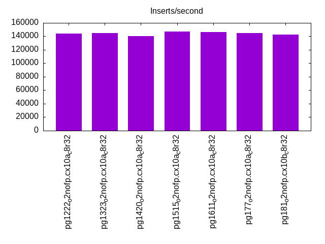
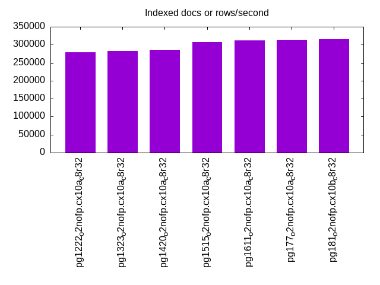
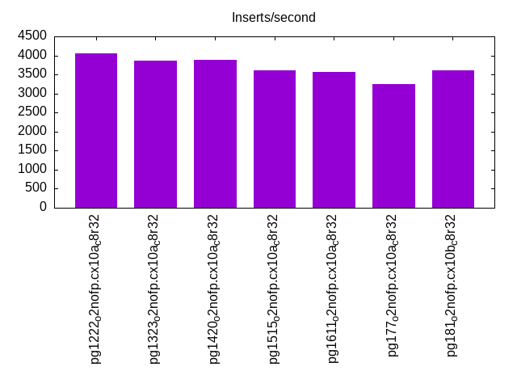
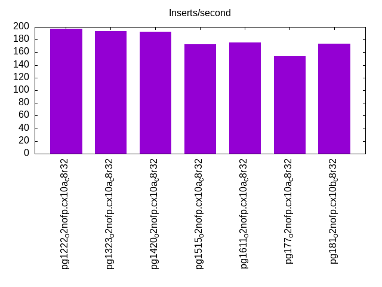
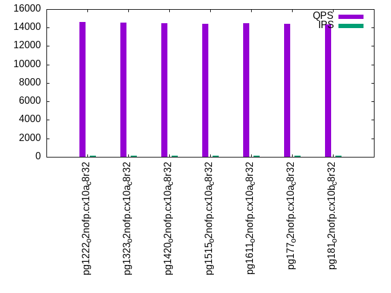
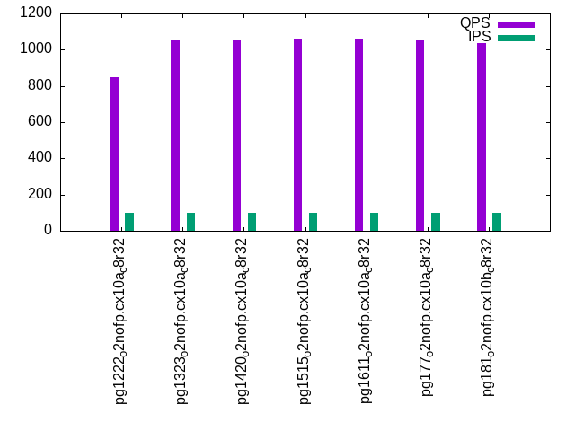
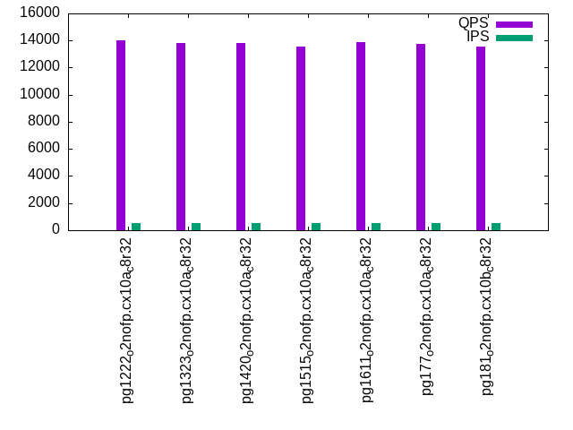
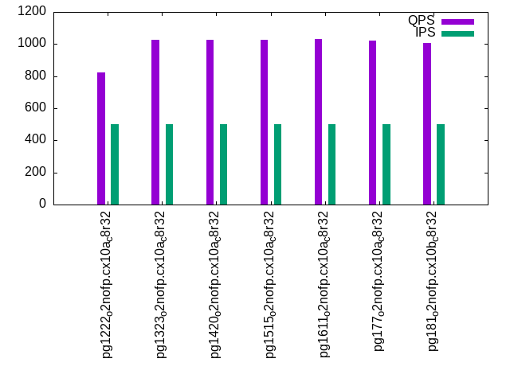
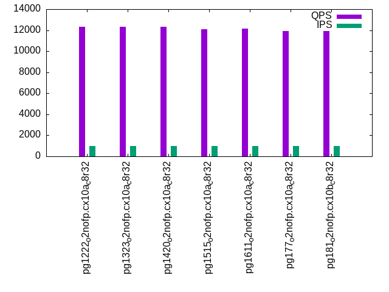
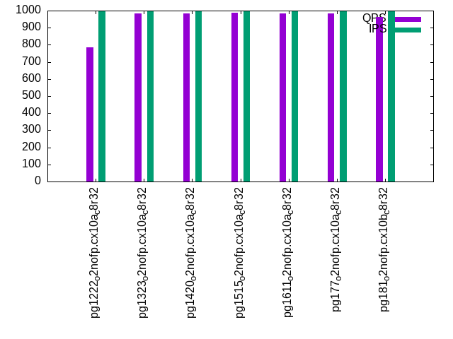

This is a report for the insert benchmark with 800M docs and 1 client(s). It is generated by scripts (bash, awk, sed) and Tufte might not be impressed. An overview of the insert benchmark is here and a short update is here. Below, by DBMS, I mean DBMS+version.config. An example is my8020.c10b40 where my means MySQL, 8020 is version 8.0.20 and c10b40 is the name for the configuration file.
The test server has 8 AMD cores, 32G RAM and an NVMe device for the database. The benchmark was run with 1 client and there were 1 or 3 connections per client (1 for queries or inserts without rate limits, 1+1 for rate limited inserts+deletes). It uses 1 table with a table per client. It loads 800M rows per table without secondary indexes, creates 3 secondary indexes per table, then inserts 4m+1m rows per table with a delete per insert to avoid growing the table. It then does 6 read+write tests for 1800s each that do queries as fast as possible with 100,100,500,500,1000,1000 inserts/s and the same for deletes/s per client concurrent with the queries. The database is larger than memory and the workload is IO-bound for except for the range query tests (qr*). Clients and the DBMS share one server.
The tested DBMS are:
The numbers are inserts/s for l.i0, l.i1 and l.i2, indexed docs (or rows) /s for l.x and queries/s for qr100, qp100 thru qr1000, qp1000" The values are the average rate over the entire test for inserts (IPS) and queries (QPS). The range of values for IPS and QPS is split into 3 parts: bottom 25%, middle 50%, top 25%. Values in the bottom 25% have a red background, values in the top 25% have a green background and values in the middle have no color. A gray background is used for values that can be ignored because the DBMS did not sustain the target insert rate. Red backgrounds are not used when the minimum value is within 80% of the max value.
| dbms | l.i0 | l.x | l.i1 | l.i2 | qr100 | qp100 | qr500 | qp500 | qr1000 | qp1000 |
|---|---|---|---|---|---|---|---|---|---|---|
| pg1222_o2nofp.cx10a_c8r32 | 144144 | 278746 | 4048 | 197 | 14589 | 847 | 14035 | 823 | 12298 | 785 |
| pg1323_o2nofp.cx10a_c8r32 | 144718 | 282187 | 3868 | 193 | 14566 | 1053 | 13816 | 1024 | 12331 | 985 |
| pg1420_o2nofp.cx10a_c8r32 | 140130 | 285205 | 3876 | 192 | 14450 | 1055 | 13828 | 1026 | 12317 | 985 |
| pg1515_o2nofp.cx10a_c8r32 | 146843 | 307102 | 3617 | 173 | 14416 | 1060 | 13580 | 1027 | 12086 | 987 |
| pg1611_o2nofp.cx10a_c8r32 | 146493 | 311526 | 3575 | 175 | 14454 | 1059 | 13886 | 1030 | 12165 | 983 |
| pg177_o2nofp.cx10a_c8r32 | 144980 | 313480 | 3241 | 154 | 14404 | 1051 | 13724 | 1023 | 11946 | 983 |
| pg181_o2nofp.cx10b_c8r32 | 142577 | 315085 | 3607 | 174 | 14323 | 1037 | 13557 | 1006 | 11899 | 964 |
This table has relative throughput, throughput for the DBMS relative to the DBMS in the first line, using the absolute throughput from the previous table. Values less than 0.95 have a yellow background. Values greater than 1.05 have a blue background.
| dbms | l.i0 | l.x | l.i1 | l.i2 | qr100 | qp100 | qr500 | qp500 | qr1000 | qp1000 |
|---|---|---|---|---|---|---|---|---|---|---|
| pg1222_o2nofp.cx10a_c8r32 | 1.00 | 1.00 | 1.00 | 1.00 | 1.00 | 1.00 | 1.00 | 1.00 | 1.00 | 1.00 |
| pg1323_o2nofp.cx10a_c8r32 | 1.00 | 1.01 | 0.96 | 0.98 | 1.00 | 1.24 | 0.98 | 1.24 | 1.00 | 1.25 |
| pg1420_o2nofp.cx10a_c8r32 | 0.97 | 1.02 | 0.96 | 0.97 | 0.99 | 1.25 | 0.99 | 1.25 | 1.00 | 1.25 |
| pg1515_o2nofp.cx10a_c8r32 | 1.02 | 1.10 | 0.89 | 0.88 | 0.99 | 1.25 | 0.97 | 1.25 | 0.98 | 1.26 |
| pg1611_o2nofp.cx10a_c8r32 | 1.02 | 1.12 | 0.88 | 0.89 | 0.99 | 1.25 | 0.99 | 1.25 | 0.99 | 1.25 |
| pg177_o2nofp.cx10a_c8r32 | 1.01 | 1.12 | 0.80 | 0.78 | 0.99 | 1.24 | 0.98 | 1.24 | 0.97 | 1.25 |
| pg181_o2nofp.cx10b_c8r32 | 0.99 | 1.13 | 0.89 | 0.88 | 0.98 | 1.22 | 0.97 | 1.22 | 0.97 | 1.23 |
This lists the average rate of inserts/s for the tests that do inserts concurrent with queries. For such tests the query rate is listed in the table above. The read+write tests are setup so that the insert rate should match the target rate every second. Cells that are not at least 95% of the target have a red background to indicate a failure to satisfy the target.
| dbms | qr100.L1 | qp100.L2 | qr500.L3 | qp500.L4 | qr1000.L5 | qp1000.L6 |
|---|---|---|---|---|---|---|
| pg1222_o2nofp.cx10a_c8r32 | 100 | 100 | 500 | 500 | 999 | 999 |
| pg1323_o2nofp.cx10a_c8r32 | 100 | 100 | 500 | 500 | 999 | 999 |
| pg1420_o2nofp.cx10a_c8r32 | 100 | 100 | 500 | 500 | 999 | 999 |
| pg1515_o2nofp.cx10a_c8r32 | 100 | 100 | 500 | 500 | 999 | 999 |
| pg1611_o2nofp.cx10a_c8r32 | 100 | 100 | 500 | 500 | 999 | 999 |
| pg177_o2nofp.cx10a_c8r32 | 100 | 100 | 500 | 500 | 999 | 999 |
| pg181_o2nofp.cx10b_c8r32 | 100 | 100 | 500 | 500 | 999 | 999 |
| target | 100 | 100 | 500 | 500 | 1000 | 1000 |
l.i0: load without secondary indexes. Graphs for performance per 1-second interval are here.
Average throughput:
Insert response time histogram: each cell has the percentage of responses that take <= the time in the header and max is the max response time in seconds. For the max column values in the top 25% of the range have a red background and in the bottom 25% of the range have a green background. The red background is not used when the min value is within 80% of the max value.
| dbms | 256us | 1ms | 4ms | 16ms | 64ms | 256ms | 1s | 4s | 16s | gt | max |
|---|---|---|---|---|---|---|---|---|---|---|---|
| pg1222_o2nofp.cx10a_c8r32 | 99.966 | 0.033 | nonzero | nonzero | 0.036 | ||||||
| pg1323_o2nofp.cx10a_c8r32 | 99.955 | 0.042 | 0.003 | 0.001 | 0.037 | ||||||
| pg1420_o2nofp.cx10a_c8r32 | 99.969 | 0.028 | 0.002 | nonzero | 0.037 | ||||||
| pg1515_o2nofp.cx10a_c8r32 | 99.970 | 0.025 | 0.004 | nonzero | 0.039 | ||||||
| pg1611_o2nofp.cx10a_c8r32 | 99.973 | 0.024 | 0.002 | nonzero | 0.037 | ||||||
| pg177_o2nofp.cx10a_c8r32 | 99.973 | 0.024 | 0.003 | nonzero | 0.036 | ||||||
| pg181_o2nofp.cx10b_c8r32 | 99.876 | 0.111 | 0.013 | nonzero | nonzero | 0.064 |
Performance metrics for the DBMS listed above. Some are normalized by throughput, others are not. Legend for results is here.
ips qps rps rmbps wps wmbps rpq rkbpq wpi wkbpi csps cpups cspq cpupq dbgb1 dbgb2 rss maxop p50 p99 tag 144144 0 29 0.2 587.2 59.2 0.000 0.002 0.004 0.420 17475 20.5 0.121 11 76.5 116.6 19.1 0.036 144782 141784 pg1222_o2nofp.cx10a_c8r32 144718 0 25 0.2 542.7 59.7 0.000 0.001 0.004 0.422 17566 20.9 0.121 12 76.5 116.6 19.3 0.037 145250 142382 pg1323_o2nofp.cx10a_c8r32 140130 0 25 0.2 524.0 57.5 0.000 0.001 0.004 0.420 16501 20.2 0.118 12 76.5 116.6 4.1 0.037 140482 138081 pg1420_o2nofp.cx10a_c8r32 146843 0 28 0.2 555.2 60.9 0.000 0.002 0.004 0.425 17213 20.6 0.117 11 76.5 116.6 2.5 0.039 147280 144583 pg1515_o2nofp.cx10a_c8r32 146493 0 28 0.2 548.7 60.2 0.000 0.002 0.004 0.421 17169 20.7 0.117 11 76.5 116.6 18.2 0.037 146883 144280 pg1611_o2nofp.cx10a_c8r32 144980 0 27 0.2 543.3 59.6 0.000 0.001 0.004 0.421 14438 20.4 0.100 11 76.5 116.6 18.5 0.036 145381 142682 pg177_o2nofp.cx10a_c8r32 142577 0 26 0.2 533.0 58.9 0.000 0.001 0.004 0.423 14427 20.4 0.101 11 76.5 116.6 2.3 0.064 144082 121486 pg181_o2nofp.cx10b_c8r32
Average values from iostat.
r/s rkB/s rrqm/s %rrqm r_await rareq-s w/s wkB/s wrqm/s %wrqm w_await wareq-s d/s dkB/s drqm/s %drqm d_await dareq-s f/s f_await aqu-sz %util 28.66 231.6 0.031 0.402 0.055 2.160 587.3 60603.2 26.93 3.672 0.224 106.8 2.142 21.28 0.000 0.000 0.418 7.207 30.55 1.138 0.171 7.109 pg1222_o2nofp.cx10a_c8r32 25.39 204.4 0.026 0.340 0.053 2.156 542.8 61123.8 28.02 3.962 0.232 112.2 2.182 18.65 0.000 0.000 0.435 6.456 29.93 1.186 0.172 7.252 pg1323_o2nofp.cx10a_c8r32 24.85 198.3 0.008 0.110 0.048 1.767 524.1 58893.9 26.82 3.749 0.230 112.1 2.162 17.82 0.000 0.000 0.403 6.129 28.98 1.119 0.163 6.621 pg1420_o2nofp.cx10a_c8r32 27.75 221.5 0.010 0.253 0.053 1.971 555.4 62424.2 25.03 3.135 0.227 112.3 0.104 6.350 0.000 0.000 0.079 2.721 30.49 1.124 0.171 6.889 pg1515_o2nofp.cx10a_c8r32 27.65 220.9 0.007 0.129 0.048 2.057 548.9 61650.5 23.86 3.161 0.232 112.2 0.111 7.373 0.000 0.000 0.102 4.335 30.34 1.124 0.170 6.853 pg1611_o2nofp.cx10a_c8r32 26.82 215.6 0.002 0.055 0.056 2.019 543.4 61071.5 21.11 2.767 0.237 112.3 0.095 4.711 0.000 0.000 0.070 4.173 30.04 1.125 0.172 6.691 pg177_o2nofp.cx10a_c8r32 25.56 205.7 0.043 0.443 0.059 2.203 533.1 60284.1 20.22 2.732 0.231 112.8 0.090 5.555 0.000 0.000 0.060 2.783 29.60 1.123 0.164 6.590 pg181_o2nofp.cx10b_c8r32
l.x: create secondary indexes.
Average throughput:
Performance metrics for the DBMS listed above. Some are normalized by throughput, others are not. Legend for results is here.
ips qps rps rmbps wps wmbps rpq rkbpq wpi wkbpi csps cpups cspq cpupq dbgb1 dbgb2 rss maxop p50 p99 tag 278746 0 779 94.0 1365.0 140.0 0.003 0.345 0.005 0.514 627 13.6 0.002 4 153.8 193.8 23.5 0.003 NA NA pg1222_o2nofp.cx10a_c8r32 282187 0 747 92.6 860.1 103.2 0.003 0.336 0.003 0.375 542 13.0 0.002 4 153.6 193.7 23.4 0.004 NA NA pg1323_o2nofp.cx10a_c8r32 285205 0 755 93.6 881.4 104.1 0.003 0.336 0.003 0.374 505 13.0 0.002 4 153.6 193.7 23.4 0.004 NA NA pg1420_o2nofp.cx10a_c8r32 307102 0 834 103.4 956.6 114.5 0.003 0.345 0.003 0.382 658 13.0 0.002 3 153.6 193.7 23.4 0.004 NA NA pg1515_o2nofp.cx10a_c8r32 311526 0 845 104.9 969.8 116.2 0.003 0.345 0.003 0.382 650 13.1 0.002 3 153.6 193.7 23.5 0.004 NA NA pg1611_o2nofp.cx10a_c8r32 313480 0 849 105.5 994.6 117.1 0.003 0.345 0.003 0.383 661 13.1 0.002 3 153.6 193.7 23.4 0.003 NA NA pg177_o2nofp.cx10a_c8r32 315085 0 853 106.0 999.2 117.6 0.003 0.345 0.003 0.382 663 13.1 0.002 3 153.6 193.7 23.4 0.005 NA NA pg181_o2nofp.cx10b_c8r32
Average values from iostat.
r/s rkB/s rrqm/s %rrqm r_await rareq-s w/s wkB/s wrqm/s %wrqm w_await wareq-s d/s dkB/s drqm/s %drqm d_await dareq-s f/s f_await aqu-sz %util 779.4 96225.5 0.014 0.002 0.119 109.1 1367.4 143616 30.46 10.91 0.552 98.75 2.652 16657.3 0.000 0.000 0.737 617.6 12.45 1.166 0.421 15.01 pg1222_o2nofp.cx10a_c8r32 746.6 94824.2 0.007 0.001 0.120 106.8 861.3 105853 20.67 13.50 0.767 99.53 2.890 22929.8 0.000 0.000 0.920 299.7 7.467 1.222 0.339 12.09 pg1323_o2nofp.cx10a_c8r32 754.9 95878.3 0.000 0.000 0.092 106.6 883.0 106749 20.81 13.64 0.749 97.27 2.722 15704.7 0.000 0.000 0.890 188.0 7.514 1.246 0.326 12.08 pg1420_o2nofp.cx10a_c8r32 834.5 105903 0.002 0.000 0.106 107.6 958.5 117482 19.06 11.50 1.235 105.3 0.927 26152.7 0.000 0.000 0.149 526.1 7.828 1.279 0.347 13.35 pg1515_o2nofp.cx10a_c8r32 844.9 107393 0.001 0.000 0.110 107.7 971.7 119270 19.64 11.26 1.198 109.0 0.803 17137.8 0.000 0.000 0.145 294.6 7.862 1.352 0.343 13.30 pg1611_o2nofp.cx10a_c8r32 849.3 108072 0.000 0.000 0.104 108.2 996.5 120143 19.71 11.45 1.161 107.7 0.808 18894.2 0.000 0.000 0.134 466.9 7.898 1.179 0.350 13.16 pg177_o2nofp.cx10a_c8r32 853.1 108560 0.003 0.000 0.094 108.1 1000.8 120578 19.65 12.48 1.152 106.3 0.806 17331.7 0.000 0.000 0.136 258.4 7.933 1.287 0.336 13.16 pg181_o2nofp.cx10b_c8r32
l.i1: continue load after secondary indexes created with 50 inserts per transaction. Graphs for performance per 1-second interval are here.
Average throughput:
Insert response time histogram: each cell has the percentage of responses that take <= the time in the header and max is the max response time in seconds. For the max column values in the top 25% of the range have a red background and in the bottom 25% of the range have a green background. The red background is not used when the min value is within 80% of the max value.
| dbms | 256us | 1ms | 4ms | 16ms | 64ms | 256ms | 1s | 4s | 16s | gt | max |
|---|---|---|---|---|---|---|---|---|---|---|---|
| pg1222_o2nofp.cx10a_c8r32 | 0.016 | 99.897 | 0.085 | 0.001 | 0.075 | ||||||
| pg1323_o2nofp.cx10a_c8r32 | 99.941 | 0.059 | 0.037 | ||||||||
| pg1420_o2nofp.cx10a_c8r32 | 99.951 | 0.049 | 0.036 | ||||||||
| pg1515_o2nofp.cx10a_c8r32 | 99.944 | 0.056 | 0.036 | ||||||||
| pg1611_o2nofp.cx10a_c8r32 | 99.926 | 0.074 | 0.035 | ||||||||
| pg177_o2nofp.cx10a_c8r32 | 99.954 | 0.046 | 0.036 | ||||||||
| pg181_o2nofp.cx10b_c8r32 | 99.946 | 0.054 | 0.040 |
Delete response time histogram: each cell has the percentage of responses that take <= the time in the header and max is the max response time in seconds. For the max column values in the top 25% of the range have a red background and in the bottom 25% of the range have a green background. The red background is not used when the min value is within 80% of the max value.
| dbms | 256us | 1ms | 4ms | 16ms | 64ms | 256ms | 1s | 4s | 16s | gt | max |
|---|---|---|---|---|---|---|---|---|---|---|---|
| pg1222_o2nofp.cx10a_c8r32 | 1.144 | 18.168 | 54.024 | 26.664 | 0.001 | 0.074 | |||||
| pg1323_o2nofp.cx10a_c8r32 | 0.925 | 16.724 | 50.331 | 32.020 | 0.031 | ||||||
| pg1420_o2nofp.cx10a_c8r32 | 0.666 | 16.635 | 50.273 | 32.426 | 0.030 | ||||||
| pg1515_o2nofp.cx10a_c8r32 | 1.348 | 16.081 | 45.806 | 36.765 | 0.032 | ||||||
| pg1611_o2nofp.cx10a_c8r32 | 0.571 | 16.061 | 45.495 | 37.872 | 0.032 | ||||||
| pg177_o2nofp.cx10a_c8r32 | 0.537 | 16.544 | 38.741 | 44.177 | 0.035 | ||||||
| pg181_o2nofp.cx10b_c8r32 | 0.589 | 16.305 | 44.462 | 38.644 | 0.034 |
Performance metrics for the DBMS listed above. Some are normalized by throughput, others are not. Legend for results is here.
ips qps rps rmbps wps wmbps rpq rkbpq wpi wkbpi csps cpups cspq cpupq dbgb1 dbgb2 rss maxop p50 p99 tag 4048 0 5154 40.8 4652.9 81.7 1.273 10.326 1.149 20.663 12526 16.3 3.094 322 154.4 194.5 23.4 0.075 3350 2150 pg1222_o2nofp.cx10a_c8r32 3868 0 5566 44.0 4565.2 78.3 1.439 11.656 1.180 20.729 13298 16.6 3.438 343 154.3 194.3 22.9 0.037 3150 2150 pg1323_o2nofp.cx10a_c8r32 3876 0 5573 44.1 4597.8 79.1 1.438 11.654 1.186 20.908 12814 16.6 3.306 343 154.3 194.3 22.9 0.036 3200 2100 pg1420_o2nofp.cx10a_c8r32 3617 0 5198 41.1 4242.9 72.6 1.437 11.648 1.173 20.548 11927 16.3 3.298 361 154.3 194.3 23.2 0.036 2850 1950 pg1515_o2nofp.cx10a_c8r32 3575 0 5144 40.7 4253.8 73.0 1.439 11.665 1.190 20.922 11782 16.3 3.296 365 154.3 194.3 22.8 0.035 2750 1900 pg1611_o2nofp.cx10a_c8r32 3241 0 4666 36.9 3865.5 66.3 1.440 11.666 1.193 20.930 10540 15.9 3.252 392 154.3 194.3 22.6 0.036 2450 1700 pg177_o2nofp.cx10a_c8r32 3607 0 5188 41.1 4252.1 72.8 1.439 11.661 1.179 20.672 11713 16.1 3.248 357 154.3 194.3 23.0 0.040 2850 1950 pg181_o2nofp.cx10b_c8r32
Average values from iostat.
r/s rkB/s rrqm/s %rrqm r_await rareq-s w/s wkB/s wrqm/s %wrqm w_await wareq-s d/s dkB/s drqm/s %drqm d_await dareq-s f/s f_await aqu-sz %util 5122.4 41551.1 0.000 0.000 0.051 8.124 4673.7 83792.0 18.69 0.756 0.102 44.67 2.024 14.83 0.000 0.000 0.418 6.961 41.17 1.169 0.617 34.03 pg1222_o2nofp.cx10a_c8r32 5534.3 44836.9 0.000 0.000 0.051 8.104 4585.0 80293.3 19.41 1.021 0.108 40.47 2.012 9.740 0.000 0.000 0.431 4.834 41.08 1.172 0.684 35.35 pg1323_o2nofp.cx10a_c8r32 5541.0 44913.4 0.000 0.000 0.052 8.107 4617.6 81141.1 22.88 0.928 0.097 38.09 2.008 10.11 0.000 0.000 0.413 5.027 41.41 1.172 0.694 35.24 pg1420_o2nofp.cx10a_c8r32 5165.4 41868.2 0.000 0.000 0.052 8.108 4259.7 74375.9 21.75 1.484 0.120 41.38 0.011 0.196 0.000 0.000 0.014 0.382 41.06 1.167 0.644 33.41 pg1515_o2nofp.cx10a_c8r32 5111.8 41439.3 0.000 0.000 0.052 8.109 4270.5 74852.1 16.95 0.759 0.103 38.28 0.019 0.195 0.000 0.000 0.029 0.658 38.16 1.202 0.647 32.72 pg1611_o2nofp.cx10a_c8r32 4635.1 37565.4 0.000 0.000 0.051 8.107 3879.1 67874.5 11.70 0.706 0.095 37.71 0.016 0.372 0.000 0.000 0.033 1.633 34.24 1.148 0.540 29.54 pg177_o2nofp.cx10a_c8r32 5156.9 41805.4 0.000 0.000 0.052 8.109 4269.0 74628.4 19.28 1.272 0.116 40.64 0.014 0.313 0.000 0.000 0.024 1.055 40.66 1.151 0.634 33.43 pg181_o2nofp.cx10b_c8r32
l.i2: continue load after secondary indexes created with 5 inserts per transaction. Graphs for performance per 1-second interval are here.
Average throughput:
Insert response time histogram: each cell has the percentage of responses that take <= the time in the header and max is the max response time in seconds. For the max column values in the top 25% of the range have a red background and in the bottom 25% of the range have a green background. The red background is not used when the min value is within 80% of the max value.
| dbms | 256us | 1ms | 4ms | 16ms | 64ms | 256ms | 1s | 4s | 16s | gt | max |
|---|---|---|---|---|---|---|---|---|---|---|---|
| pg1222_o2nofp.cx10a_c8r32 | 52.012 | 47.952 | 0.036 | 0.013 | |||||||
| pg1323_o2nofp.cx10a_c8r32 | 55.883 | 44.048 | 0.069 | 0.016 | |||||||
| pg1420_o2nofp.cx10a_c8r32 | 53.168 | 46.767 | 0.065 | 0.013 | |||||||
| pg1515_o2nofp.cx10a_c8r32 | 50.270 | 49.679 | 0.051 | 0.013 | |||||||
| pg1611_o2nofp.cx10a_c8r32 | 47.752 | 52.190 | 0.057 | 0.013 | |||||||
| pg177_o2nofp.cx10a_c8r32 | 57.098 | 42.874 | 0.027 | 0.012 | |||||||
| pg181_o2nofp.cx10b_c8r32 | 57.139 | 42.847 | 0.014 | 0.012 |
Delete response time histogram: each cell has the percentage of responses that take <= the time in the header and max is the max response time in seconds. For the max column values in the top 25% of the range have a red background and in the bottom 25% of the range have a green background. The red background is not used when the min value is within 80% of the max value.
| dbms | 256us | 1ms | 4ms | 16ms | 64ms | 256ms | 1s | 4s | 16s | gt | max |
|---|---|---|---|---|---|---|---|---|---|---|---|
| pg1222_o2nofp.cx10a_c8r32 | 99.999 | 0.001 | 0.098 | ||||||||
| pg1323_o2nofp.cx10a_c8r32 | 99.999 | 0.001 | 0.104 | ||||||||
| pg1420_o2nofp.cx10a_c8r32 | 99.999 | 0.001 | 0.101 | ||||||||
| pg1515_o2nofp.cx10a_c8r32 | 99.999 | 0.001 | 0.100 | ||||||||
| pg1611_o2nofp.cx10a_c8r32 | 99.999 | 0.001 | 0.099 | ||||||||
| pg177_o2nofp.cx10a_c8r32 | 99.999 | 0.001 | 0.098 | ||||||||
| pg181_o2nofp.cx10b_c8r32 | 99.999 | 0.001 | 0.103 |
Performance metrics for the DBMS listed above. Some are normalized by throughput, others are not. Legend for results is here.
ips qps rps rmbps wps wmbps rpq rkbpq wpi wkbpi csps cpups cspq cpupq dbgb1 dbgb2 rss maxop p50 p99 tag 197 0 212 1.7 506.4 7.0 1.075 8.775 2.575 36.610 1823 13.1 9.267 5328 154.6 194.6 23.4 0.013 195 175 pg1222_o2nofp.cx10a_c8r32 193 0 207 1.7 557.6 7.6 1.072 8.753 2.888 40.181 1856 13.0 9.612 5386 154.4 194.5 23.4 0.016 190 170 pg1323_o2nofp.cx10a_c8r32 192 0 206 1.6 553.2 7.5 1.071 8.754 2.881 40.172 1513 12.9 7.881 5375 154.5 194.5 23.3 0.013 190 170 pg1420_o2nofp.cx10a_c8r32 173 0 186 1.5 503.4 7.0 1.072 8.766 2.907 41.636 1304 12.8 7.527 5912 154.4 194.5 23.3 0.013 170 155 pg1515_o2nofp.cx10a_c8r32 175 0 188 1.5 502.3 7.0 1.073 8.775 2.866 41.072 1328 12.8 7.576 5841 154.4 194.5 23.3 0.013 175 150 pg1611_o2nofp.cx10a_c8r32 154 0 166 1.3 450.8 6.3 1.073 8.771 2.920 41.861 1078 12.7 6.983 6580 154.4 191.5 23.4 0.012 155 135 pg177_o2nofp.cx10a_c8r32 174 0 186 1.5 505.6 7.0 1.071 8.759 2.904 41.165 1189 12.8 6.827 5882 154.5 194.5 23.3 0.012 175 145 pg181_o2nofp.cx10b_c8r32
Average values from iostat.
r/s rkB/s rrqm/s %rrqm r_await rareq-s w/s wkB/s wrqm/s %wrqm w_await wareq-s d/s dkB/s drqm/s %drqm d_await dareq-s f/s f_await aqu-sz %util 211.5 1725.9 0.000 0.000 0.077 8.160 506.2 7199.5 6.600 1.849 0.051 17.40 2.008 9.770 0.000 0.000 0.383 4.822 5.871 1.165 0.043 2.864 pg1222_o2nofp.cx10a_c8r32 206.9 1690.0 0.000 0.000 0.078 8.166 558.1 7763.6 7.266 2.410 0.069 19.53 2.009 9.878 0.000 0.000 0.398 4.846 6.426 1.190 0.046 3.070 pg1323_o2nofp.cx10a_c8r32 205.7 1680.6 0.000 0.000 0.079 8.171 553.7 7718.5 7.775 2.304 0.061 19.10 2.010 10.22 0.000 0.000 0.393 5.034 6.423 1.183 0.046 3.091 pg1420_o2nofp.cx10a_c8r32 185.6 1518.0 0.000 0.000 0.081 8.180 503.9 7215.2 3.773 1.406 0.064 20.24 0.003 0.164 0.000 0.000 0.002 0.137 5.710 1.186 0.040 2.607 pg1515_o2nofp.cx10a_c8r32 188.0 1538.0 0.000 0.000 0.081 8.178 502.8 7204.6 5.184 1.559 0.065 19.46 0.008 0.203 0.000 0.000 0.005 0.108 6.213 1.195 0.043 2.771 pg1611_o2nofp.cx10a_c8r32 165.7 1354.1 0.000 0.000 0.060 8.172 451.1 6467.1 4.051 1.364 0.078 20.26 0.040 489.4 0.000 0.000 0.020 12.58 6.173 1.178 0.039 2.589 pg177_o2nofp.cx10a_c8r32 186.4 1524.8 0.000 0.000 0.059 8.179 506.0 7171.4 3.249 1.262 0.067 19.71 0.001 0.122 0.000 0.000 0.002 0.241 5.763 1.181 0.038 2.597 pg181_o2nofp.cx10b_c8r32
qr100.L1: range queries with 100 insert/s per client. Graphs for performance per 1-second interval are here.
Average throughput:
Query response time histogram: each cell has the percentage of responses that take <= the time in the header and max is the max response time in seconds. For max values in the top 25% of the range have a red background and in the bottom 25% of the range have a green background. The red background is not used when the min value is within 80% of the max value.
| dbms | 256us | 1ms | 4ms | 16ms | 64ms | 256ms | 1s | 4s | 16s | gt | max |
|---|---|---|---|---|---|---|---|---|---|---|---|
| pg1222_o2nofp.cx10a_c8r32 | 99.997 | 0.002 | nonzero | nonzero | 0.009 | ||||||
| pg1323_o2nofp.cx10a_c8r32 | 99.998 | 0.002 | nonzero | nonzero | 0.009 | ||||||
| pg1420_o2nofp.cx10a_c8r32 | 99.998 | 0.002 | nonzero | nonzero | 0.009 | ||||||
| pg1515_o2nofp.cx10a_c8r32 | 99.998 | 0.002 | nonzero | nonzero | 0.010 | ||||||
| pg1611_o2nofp.cx10a_c8r32 | 99.998 | 0.002 | nonzero | nonzero | 0.009 | ||||||
| pg177_o2nofp.cx10a_c8r32 | 99.998 | 0.002 | nonzero | nonzero | 0.009 | ||||||
| pg181_o2nofp.cx10b_c8r32 | 99.999 | nonzero | nonzero | nonzero | 0.010 |
Insert response time histogram: each cell has the percentage of responses that take <= the time in the header and max is the max response time in seconds. For max values in the top 25% of the range have a red background and in the bottom 25% of the range have a green background. The red background is not used when the min value is within 80% of the max value.
| dbms | 256us | 1ms | 4ms | 16ms | 64ms | 256ms | 1s | 4s | 16s | gt | max |
|---|---|---|---|---|---|---|---|---|---|---|---|
| pg1222_o2nofp.cx10a_c8r32 | 58.111 | 41.889 | 0.021 | ||||||||
| pg1323_o2nofp.cx10a_c8r32 | 76.000 | 24.000 | 0.021 | ||||||||
| pg1420_o2nofp.cx10a_c8r32 | 76.250 | 23.750 | 0.022 | ||||||||
| pg1515_o2nofp.cx10a_c8r32 | 0.028 | 79.917 | 20.056 | 0.023 | |||||||
| pg1611_o2nofp.cx10a_c8r32 | 0.056 | 72.778 | 27.167 | 0.022 | |||||||
| pg177_o2nofp.cx10a_c8r32 | 99.750 | 0.250 | 0.021 | ||||||||
| pg181_o2nofp.cx10b_c8r32 | 0.056 | 99.667 | 0.278 | 0.023 |
Delete response time histogram: each cell has the percentage of responses that take <= the time in the header and max is the max response time in seconds. For max values in the top 25% of the range have a red background and in the bottom 25% of the range have a green background. The red background is not used when the min value is within 80% of the max value.
| dbms | 256us | 1ms | 4ms | 16ms | 64ms | 256ms | 1s | 4s | 16s | gt | max |
|---|---|---|---|---|---|---|---|---|---|---|---|
| pg1222_o2nofp.cx10a_c8r32 | 44.000 | 55.972 | 0.028 | 0.010 | |||||||
| pg1323_o2nofp.cx10a_c8r32 | 54.444 | 45.528 | 0.028 | 0.010 | |||||||
| pg1420_o2nofp.cx10a_c8r32 | 54.750 | 45.194 | 0.056 | 0.010 | |||||||
| pg1515_o2nofp.cx10a_c8r32 | 50.444 | 49.500 | 0.056 | 0.010 | |||||||
| pg1611_o2nofp.cx10a_c8r32 | 52.944 | 47.000 | 0.056 | 0.010 | |||||||
| pg177_o2nofp.cx10a_c8r32 | 50.694 | 49.250 | 0.056 | 0.010 | |||||||
| pg181_o2nofp.cx10b_c8r32 | 48.889 | 51.056 | 0.056 | 0.010 |
Performance metrics for the DBMS listed above. Some are normalized by throughput, others are not. Legend for results is here.
ips qps rps rmbps wps wmbps rpq rkbpq wpi wkbpi csps cpups cspq cpupq dbgb1 dbgb2 rss maxop p50 p99 tag 100 14589 113 0.9 24.1 1.5 0.008 0.065 0.241 15.600 56024 11.1 3.840 61 154.6 194.7 23.4 0.009 14558 14318 pg1222_o2nofp.cx10a_c8r32 100 14566 112 0.9 56.8 1.8 0.008 0.065 0.568 18.456 55969 12.6 3.842 69 154.5 192.7 23.4 0.009 14542 14334 pg1323_o2nofp.cx10a_c8r32 100 14450 112 0.9 64.5 1.9 0.008 0.066 0.645 19.123 55451 12.5 3.837 69 154.5 191.9 23.3 0.009 14462 14142 pg1420_o2nofp.cx10a_c8r32 100 14416 111 0.9 62.2 1.8 0.008 0.066 0.622 18.892 55280 12.6 3.835 70 154.5 191.9 23.3 0.010 14398 14174 pg1515_o2nofp.cx10a_c8r32 100 14454 112 0.9 62.1 1.8 0.008 0.066 0.622 18.909 55459 12.6 3.837 70 154.5 191.7 23.3 0.009 14478 14190 pg1611_o2nofp.cx10a_c8r32 100 14404 112 0.9 66.2 1.9 0.008 0.066 0.663 19.381 55257 12.5 3.836 69 154.5 190.5 23.4 0.009 14446 14174 pg177_o2nofp.cx10a_c8r32 100 14323 111 0.9 66.8 1.9 0.008 0.064 0.668 19.416 54917 12.5 3.834 70 154.5 193.1 23.3 0.010 14350 14046 pg181_o2nofp.cx10b_c8r32
Average values from iostat.
r/s rkB/s rrqm/s %rrqm r_await rareq-s w/s wkB/s wrqm/s %wrqm w_await wareq-s d/s dkB/s drqm/s %drqm d_await dareq-s f/s f_await aqu-sz %util 109.7 924.1 0.000 0.000 0.163 8.423 24.08 1559.7 4.230 15.14 1.622 66.55 2.000 9.598 0.000 0.000 1.536 4.799 3.706 1.613 0.065 3.737 pg1222_o2nofp.cx10a_c8r32 108.6 923.2 0.000 0.000 0.139 8.497 56.89 1846.1 4.114 12.34 2.235 57.26 2.000 9.595 0.000 0.000 1.420 4.798 3.713 1.420 0.218 3.917 pg1323_o2nofp.cx10a_c8r32 108.6 927.3 0.000 0.000 0.136 8.534 64.66 1912.9 4.556 12.49 2.547 54.00 2.001 9.997 0.000 0.000 1.163 5.457 3.709 1.402 0.284 3.971 pg1420_o2nofp.cx10a_c8r32 108.4 921.8 0.000 0.000 0.134 8.501 62.35 1889.9 1.792 5.798 2.885 58.83 0.001 0.002 0.000 0.000 0.003 0.011 3.675 1.394 0.320 3.889 pg1515_o2nofp.cx10a_c8r32 108.8 920.0 0.000 0.000 0.140 8.448 62.20 1889.7 1.803 5.857 2.653 59.59 0.001 0.002 0.000 0.000 0.000 0.011 3.700 1.518 0.275 3.846 pg1611_o2nofp.cx10a_c8r32 108.5 895.4 0.000 0.000 0.121 8.254 66.31 1936.7 1.467 4.995 2.690 61.28 0.001 0.002 0.000 0.000 0.000 0.011 2.781 1.374 0.306 3.790 pg177_o2nofp.cx10a_c8r32 108.0 897.8 0.000 0.000 0.123 8.315 66.95 1942.4 1.621 5.312 2.696 60.29 0.001 0.002 0.000 0.000 0.000 0.011 2.804 1.347 0.302 3.755 pg181_o2nofp.cx10b_c8r32
qp100.L2: point queries with 100 insert/s per client. Graphs for performance per 1-second interval are here.
Average throughput:
Query response time histogram: each cell has the percentage of responses that take <= the time in the header and max is the max response time in seconds. For max values in the top 25% of the range have a red background and in the bottom 25% of the range have a green background. The red background is not used when the min value is within 80% of the max value.
| dbms | 256us | 1ms | 4ms | 16ms | 64ms | 256ms | 1s | 4s | 16s | gt | max |
|---|---|---|---|---|---|---|---|---|---|---|---|
| pg1222_o2nofp.cx10a_c8r32 | 22.661 | 77.330 | 0.009 | 0.014 | |||||||
| pg1323_o2nofp.cx10a_c8r32 | 68.011 | 31.984 | 0.006 | 0.013 | |||||||
| pg1420_o2nofp.cx10a_c8r32 | nonzero | 68.450 | 31.546 | 0.004 | 0.015 | ||||||
| pg1515_o2nofp.cx10a_c8r32 | nonzero | 69.079 | 30.916 | 0.005 | 0.013 | ||||||
| pg1611_o2nofp.cx10a_c8r32 | nonzero | 69.461 | 30.517 | 0.017 | 0.005 | 0.019 | |||||
| pg177_o2nofp.cx10a_c8r32 | nonzero | 67.738 | 32.259 | 0.003 | 0.013 | ||||||
| pg181_o2nofp.cx10b_c8r32 | nonzero | 65.091 | 34.893 | 0.009 | 0.006 | 0.021 |
Insert response time histogram: each cell has the percentage of responses that take <= the time in the header and max is the max response time in seconds. For max values in the top 25% of the range have a red background and in the bottom 25% of the range have a green background. The red background is not used when the min value is within 80% of the max value.
| dbms | 256us | 1ms | 4ms | 16ms | 64ms | 256ms | 1s | 4s | 16s | gt | max |
|---|---|---|---|---|---|---|---|---|---|---|---|
| pg1222_o2nofp.cx10a_c8r32 | 99.528 | 0.472 | 0.023 | ||||||||
| pg1323_o2nofp.cx10a_c8r32 | 99.917 | 0.083 | 0.024 | ||||||||
| pg1420_o2nofp.cx10a_c8r32 | 99.889 | 0.111 | 0.023 | ||||||||
| pg1515_o2nofp.cx10a_c8r32 | 99.806 | 0.194 | 0.022 | ||||||||
| pg1611_o2nofp.cx10a_c8r32 | 99.806 | 0.194 | 0.019 | ||||||||
| pg177_o2nofp.cx10a_c8r32 | 99.972 | 0.028 | 0.020 | ||||||||
| pg181_o2nofp.cx10b_c8r32 | 99.778 | 0.222 | 0.022 |
Delete response time histogram: each cell has the percentage of responses that take <= the time in the header and max is the max response time in seconds. For max values in the top 25% of the range have a red background and in the bottom 25% of the range have a green background. The red background is not used when the min value is within 80% of the max value.
| dbms | 256us | 1ms | 4ms | 16ms | 64ms | 256ms | 1s | 4s | 16s | gt | max |
|---|---|---|---|---|---|---|---|---|---|---|---|
| pg1222_o2nofp.cx10a_c8r32 | 6.250 | 93.694 | 0.056 | 0.008 | |||||||
| pg1323_o2nofp.cx10a_c8r32 | 0.167 | 99.806 | 0.028 | 0.009 | |||||||
| pg1420_o2nofp.cx10a_c8r32 | 0.194 | 99.778 | 0.028 | 0.009 | |||||||
| pg1515_o2nofp.cx10a_c8r32 | 0.361 | 99.611 | 0.028 | 0.009 | |||||||
| pg1611_o2nofp.cx10a_c8r32 | 99.861 | 0.139 | 0.010 | ||||||||
| pg177_o2nofp.cx10a_c8r32 | 99.972 | 0.028 | 0.009 | ||||||||
| pg181_o2nofp.cx10b_c8r32 | 99.806 | 0.194 | 0.010 |
Performance metrics for the DBMS listed above. Some are normalized by throughput, others are not. Legend for results is here.
ips qps rps rmbps wps wmbps rpq rkbpq wpi wkbpi csps cpups cspq cpupq dbgb1 dbgb2 rss maxop p50 p99 tag 100 847 10669 83.8 403.8 4.5 12.602 101.382 4.038 46.075 23904 3.9 28.236 369 154.6 193.6 23.4 0.014 880 560 pg1222_o2nofp.cx10a_c8r32 100 1053 13120 103.0 373.5 4.3 12.462 100.225 3.739 43.727 29392 5.4 27.918 410 154.5 192.7 23.4 0.013 1088 688 pg1323_o2nofp.cx10a_c8r32 100 1055 13143 103.3 366.0 4.2 12.454 100.245 3.663 43.139 29334 5.3 27.795 402 154.5 191.9 23.3 0.015 1088 704 pg1420_o2nofp.cx10a_c8r32 100 1060 13179 103.6 363.9 4.2 12.439 100.143 3.639 42.876 29364 5.2 27.715 393 154.5 191.9 23.3 0.013 1088 704 pg1515_o2nofp.cx10a_c8r32 100 1059 13181 103.7 364.4 4.2 12.447 100.265 3.644 42.928 29367 5.5 27.731 415 154.5 191.7 23.3 0.019 1088 704 pg1611_o2nofp.cx10a_c8r32 100 1051 13092 102.9 357.6 4.1 12.460 100.284 3.579 42.463 29151 5.5 27.744 419 154.5 190.6 23.4 0.013 1088 688 pg177_o2nofp.cx10a_c8r32 100 1037 12962 102.0 356.6 4.1 12.497 100.682 3.566 42.355 28851 5.7 27.816 440 154.5 193.1 23.3 0.021 1072 688 pg181_o2nofp.cx10b_c8r32
Average values from iostat.
r/s rkB/s rrqm/s %rrqm r_await rareq-s w/s wkB/s wrqm/s %wrqm w_await wareq-s d/s dkB/s drqm/s %drqm d_await dareq-s f/s f_await aqu-sz %util 10669.0 85830.3 0.000 0.000 0.066 8.045 402.8 4597.9 5.897 2.452 0.051 14.26 2.041 648.5 0.000 0.000 0.369 42.82 4.163 1.206 0.715 70.66 pg1222_o2nofp.cx10a_c8r32 13120.2 105517 0.000 0.000 0.050 8.042 372.2 4358.2 5.705 2.361 0.049 14.03 2.001 18.73 0.000 0.000 0.375 8.945 4.286 1.221 0.646 60.47 pg1323_o2nofp.cx10a_c8r32 13143.4 105800 0.000 0.000 0.050 8.049 364.8 4300.7 6.204 2.570 0.049 14.02 2.002 19.12 0.000 0.000 0.373 8.797 4.301 1.223 0.646 60.35 pg1420_o2nofp.cx10a_c8r32 13178.9 106101 0.000 0.000 0.050 8.051 362.8 4278.9 3.050 1.271 0.048 14.06 0.001 0.002 0.000 0.000 0.000 0.011 4.335 1.227 0.645 60.38 pg1515_o2nofp.cx10a_c8r32 13181.0 106182 0.000 0.000 0.050 8.056 363.2 4283.7 3.384 1.432 0.050 14.12 0.001 0.002 0.000 0.000 0.000 0.011 4.324 1.228 0.643 60.11 pg1611_o2nofp.cx10a_c8r32 13091.6 105370 0.000 0.000 0.050 8.049 356.5 4234.0 2.364 0.990 0.049 14.18 0.002 9.132 0.000 0.000 0.003 45.66 3.643 1.214 0.641 60.42 pg177_o2nofp.cx10a_c8r32 12961.7 104428 0.000 0.000 0.050 8.056 355.6 4227.8 2.383 1.032 0.048 14.25 0.001 0.002 0.000 0.000 0.003 0.011 3.631 1.215 0.631 59.88 pg181_o2nofp.cx10b_c8r32
qr500.L3: range queries with 500 insert/s per client. Graphs for performance per 1-second interval are here.
Average throughput:
Query response time histogram: each cell has the percentage of responses that take <= the time in the header and max is the max response time in seconds. For max values in the top 25% of the range have a red background and in the bottom 25% of the range have a green background. The red background is not used when the min value is within 80% of the max value.
| dbms | 256us | 1ms | 4ms | 16ms | 64ms | 256ms | 1s | 4s | 16s | gt | max |
|---|---|---|---|---|---|---|---|---|---|---|---|
| pg1222_o2nofp.cx10a_c8r32 | 99.992 | 0.007 | nonzero | 0.001 | nonzero | 0.033 | |||||
| pg1323_o2nofp.cx10a_c8r32 | 99.994 | 0.005 | nonzero | 0.001 | nonzero | 0.042 | |||||
| pg1420_o2nofp.cx10a_c8r32 | 99.995 | 0.004 | nonzero | 0.001 | nonzero | 0.022 | |||||
| pg1515_o2nofp.cx10a_c8r32 | 99.994 | 0.005 | 0.001 | 0.001 | nonzero | 0.026 | |||||
| pg1611_o2nofp.cx10a_c8r32 | 99.995 | 0.005 | nonzero | nonzero | nonzero | 0.024 | |||||
| pg177_o2nofp.cx10a_c8r32 | 99.995 | 0.004 | nonzero | nonzero | nonzero | 0.022 | |||||
| pg181_o2nofp.cx10b_c8r32 | 99.995 | 0.004 | nonzero | nonzero | nonzero | 0.030 |
Insert response time histogram: each cell has the percentage of responses that take <= the time in the header and max is the max response time in seconds. For max values in the top 25% of the range have a red background and in the bottom 25% of the range have a green background. The red background is not used when the min value is within 80% of the max value.
| dbms | 256us | 1ms | 4ms | 16ms | 64ms | 256ms | 1s | 4s | 16s | gt | max |
|---|---|---|---|---|---|---|---|---|---|---|---|
| pg1222_o2nofp.cx10a_c8r32 | 91.728 | 8.272 | 0.023 | ||||||||
| pg1323_o2nofp.cx10a_c8r32 | 93.306 | 6.694 | 0.025 | ||||||||
| pg1420_o2nofp.cx10a_c8r32 | 93.633 | 6.367 | 0.024 | ||||||||
| pg1515_o2nofp.cx10a_c8r32 | 93.361 | 6.639 | 0.030 | ||||||||
| pg1611_o2nofp.cx10a_c8r32 | 93.200 | 6.800 | 0.024 | ||||||||
| pg177_o2nofp.cx10a_c8r32 | 94.083 | 5.917 | 0.023 | ||||||||
| pg181_o2nofp.cx10b_c8r32 | 94.161 | 5.839 | 0.025 |
Delete response time histogram: each cell has the percentage of responses that take <= the time in the header and max is the max response time in seconds. For max values in the top 25% of the range have a red background and in the bottom 25% of the range have a green background. The red background is not used when the min value is within 80% of the max value.
| dbms | 256us | 1ms | 4ms | 16ms | 64ms | 256ms | 1s | 4s | 16s | gt | max |
|---|---|---|---|---|---|---|---|---|---|---|---|
| pg1222_o2nofp.cx10a_c8r32 | 49.756 | 50.244 | 0.015 | ||||||||
| pg1323_o2nofp.cx10a_c8r32 | 46.100 | 53.900 | 0.016 | ||||||||
| pg1420_o2nofp.cx10a_c8r32 | 45.972 | 54.028 | 0.015 | ||||||||
| pg1515_o2nofp.cx10a_c8r32 | 40.822 | 59.178 | 0.015 | ||||||||
| pg1611_o2nofp.cx10a_c8r32 | 45.050 | 54.950 | 0.015 | ||||||||
| pg177_o2nofp.cx10a_c8r32 | 42.761 | 57.239 | 0.015 | ||||||||
| pg181_o2nofp.cx10b_c8r32 | 45.367 | 54.633 | 0.015 |
Performance metrics for the DBMS listed above. Some are normalized by throughput, others are not. Legend for results is here.
ips qps rps rmbps wps wmbps rpq rkbpq wpi wkbpi csps cpups cspq cpupq dbgb1 dbgb2 rss maxop p50 p99 tag 500 14035 874 7.0 195.3 7.6 0.062 0.508 0.391 15.593 55596 12.1 3.961 69 154.7 191.1 23.4 0.033 14046 13519 pg1222_o2nofp.cx10a_c8r32 500 13816 876 7.0 300.2 8.8 0.063 0.517 0.601 18.126 54804 13.6 3.967 79 154.6 190.5 23.4 0.042 13822 13358 pg1323_o2nofp.cx10a_c8r32 500 13828 876 7.0 325.1 9.1 0.063 0.517 0.651 18.680 54737 13.6 3.958 79 154.6 190.1 23.3 0.022 13854 13342 pg1420_o2nofp.cx10a_c8r32 500 13580 876 7.0 322.7 9.1 0.065 0.526 0.645 18.615 53723 13.7 3.956 81 154.6 190.3 23.3 0.026 13582 13086 pg1515_o2nofp.cx10a_c8r32 500 13886 875 7.0 321.6 9.1 0.063 0.515 0.643 18.588 54891 13.7 3.953 79 154.6 190.3 23.3 0.024 13902 13438 pg1611_o2nofp.cx10a_c8r32 500 13724 875 7.0 339.0 9.3 0.064 0.520 0.678 18.975 54240 13.7 3.952 80 154.6 190.1 23.4 0.022 13742 13230 pg177_o2nofp.cx10a_c8r32 500 13557 874 7.0 341.5 9.3 0.065 0.527 0.684 19.037 53635 13.7 3.956 81 154.6 190.6 23.3 0.030 13567 13134 pg181_o2nofp.cx10b_c8r32
Average values from iostat.
r/s rkB/s rrqm/s %rrqm r_await rareq-s w/s wkB/s wrqm/s %wrqm w_await wareq-s d/s dkB/s drqm/s %drqm d_await dareq-s f/s f_await aqu-sz %util 866.0 7032.1 0.000 0.000 0.080 8.121 195.4 7791.6 5.700 4.358 0.697 68.69 2.099 1488.4 0.000 0.000 1.384 67.17 8.127 1.223 0.155 9.322 pg1222_o2nofp.cx10a_c8r32 867.2 7046.2 0.000 0.000 0.063 8.127 300.7 9057.9 5.802 4.753 0.614 70.13 2.091 1342.3 0.000 0.000 1.038 43.53 8.229 1.256 0.150 7.672 pg1323_o2nofp.cx10a_c8r32 867.2 7056.2 0.000 0.000 0.063 8.138 325.7 9337.5 6.416 5.090 0.588 68.15 2.069 1068.9 0.000 0.000 1.125 44.79 8.264 1.250 0.154 7.595 pg1420_o2nofp.cx10a_c8r32 867.2 7051.8 0.000 0.000 0.062 8.134 323.1 9307.0 3.071 2.392 0.594 69.82 0.067 985.9 0.000 0.000 0.002 86.93 8.254 1.270 0.142 7.386 pg1515_o2nofp.cx10a_c8r32 866.6 7051.5 0.000 0.000 0.062 8.139 322.0 9295.8 3.198 2.427 0.590 70.25 0.061 885.5 0.000 0.000 0.004 41.01 8.286 1.262 0.142 7.430 pg1611_o2nofp.cx10a_c8r32 866.7 7048.5 0.000 0.000 0.059 8.135 339.5 9490.5 2.366 1.759 0.550 66.86 0.025 328.7 0.000 0.000 0.001 38.24 7.665 1.229 0.143 7.209 pg177_o2nofp.cx10a_c8r32 866.3 7055.3 0.000 0.000 0.059 8.146 342.2 9516.4 2.888 1.957 0.524 65.76 0.099 1478.8 0.000 0.000 0.005 42.30 7.593 1.217 0.141 7.156 pg181_o2nofp.cx10b_c8r32
qp500.L4: point queries with 500 insert/s per client. Graphs for performance per 1-second interval are here.
Average throughput:
Query response time histogram: each cell has the percentage of responses that take <= the time in the header and max is the max response time in seconds. For max values in the top 25% of the range have a red background and in the bottom 25% of the range have a green background. The red background is not used when the min value is within 80% of the max value.
| dbms | 256us | 1ms | 4ms | 16ms | 64ms | 256ms | 1s | 4s | 16s | gt | max |
|---|---|---|---|---|---|---|---|---|---|---|---|
| pg1222_o2nofp.cx10a_c8r32 | 17.474 | 82.511 | 0.015 | 0.016 | |||||||
| pg1323_o2nofp.cx10a_c8r32 | nonzero | 61.825 | 38.167 | 0.007 | 0.014 | ||||||
| pg1420_o2nofp.cx10a_c8r32 | nonzero | 62.646 | 37.346 | 0.008 | 0.013 | ||||||
| pg1515_o2nofp.cx10a_c8r32 | 62.777 | 37.217 | 0.006 | nonzero | 0.019 | ||||||
| pg1611_o2nofp.cx10a_c8r32 | nonzero | 63.329 | 36.646 | 0.021 | 0.004 | 0.019 | |||||
| pg177_o2nofp.cx10a_c8r32 | nonzero | 62.004 | 37.990 | 0.006 | nonzero | 0.023 | |||||
| pg181_o2nofp.cx10b_c8r32 | 57.592 | 42.400 | 0.007 | 0.014 |
Insert response time histogram: each cell has the percentage of responses that take <= the time in the header and max is the max response time in seconds. For max values in the top 25% of the range have a red background and in the bottom 25% of the range have a green background. The red background is not used when the min value is within 80% of the max value.
| dbms | 256us | 1ms | 4ms | 16ms | 64ms | 256ms | 1s | 4s | 16s | gt | max |
|---|---|---|---|---|---|---|---|---|---|---|---|
| pg1222_o2nofp.cx10a_c8r32 | 99.911 | 0.089 | 0.023 | ||||||||
| pg1323_o2nofp.cx10a_c8r32 | 99.933 | 0.067 | 0.023 | ||||||||
| pg1420_o2nofp.cx10a_c8r32 | 99.967 | 0.033 | 0.030 | ||||||||
| pg1515_o2nofp.cx10a_c8r32 | 99.961 | 0.039 | 0.024 | ||||||||
| pg1611_o2nofp.cx10a_c8r32 | 99.789 | 0.211 | 0.023 | ||||||||
| pg177_o2nofp.cx10a_c8r32 | 99.917 | 0.083 | 0.028 | ||||||||
| pg181_o2nofp.cx10b_c8r32 | 99.939 | 0.061 | 0.020 |
Delete response time histogram: each cell has the percentage of responses that take <= the time in the header and max is the max response time in seconds. For max values in the top 25% of the range have a red background and in the bottom 25% of the range have a green background. The red background is not used when the min value is within 80% of the max value.
| dbms | 256us | 1ms | 4ms | 16ms | 64ms | 256ms | 1s | 4s | 16s | gt | max |
|---|---|---|---|---|---|---|---|---|---|---|---|
| pg1222_o2nofp.cx10a_c8r32 | 99.917 | 0.083 | 0.042 | ||||||||
| pg1323_o2nofp.cx10a_c8r32 | 98.156 | 1.844 | 0.045 | ||||||||
| pg1420_o2nofp.cx10a_c8r32 | 98.300 | 1.700 | 0.043 | ||||||||
| pg1515_o2nofp.cx10a_c8r32 | 99.072 | 0.928 | 0.043 | ||||||||
| pg1611_o2nofp.cx10a_c8r32 | 97.983 | 2.017 | 0.043 | ||||||||
| pg177_o2nofp.cx10a_c8r32 | 95.572 | 4.428 | 0.042 | ||||||||
| pg181_o2nofp.cx10b_c8r32 | 97.822 | 2.178 | 0.043 |
Performance metrics for the DBMS listed above. Some are normalized by throughput, others are not. Legend for results is here.
ips qps rps rmbps wps wmbps rpq rkbpq wpi wkbpi csps cpups cspq cpupq dbgb1 dbgb2 rss maxop p50 p99 tag 500 823 11341 89.0 1760.9 19.9 13.773 110.664 3.522 40.746 25322 5.6 30.753 544 154.8 189.2 23.4 0.016 848 640 pg1222_o2nofp.cx10a_c8r32 500 1024 13730 107.7 1655.5 19.1 13.414 107.761 3.311 39.106 30683 7.0 29.975 547 154.6 189.0 23.4 0.014 1040 784 pg1323_o2nofp.cx10a_c8r32 500 1026 13771 108.1 1630.6 18.9 13.416 107.843 3.263 38.725 30595 6.9 29.805 538 154.6 188.6 23.3 0.013 1056 784 pg1420_o2nofp.cx10a_c8r32 500 1027 13775 108.1 1628.0 18.9 13.411 107.808 3.258 38.682 30551 7.0 29.745 545 154.6 188.7 23.3 0.019 1056 784 pg1515_o2nofp.cx10a_c8r32 500 1030 13799 108.4 1629.2 18.9 13.404 107.794 3.258 38.664 30608 7.7 29.731 598 154.6 188.7 23.3 0.019 1056 800 pg1611_o2nofp.cx10a_c8r32 500 1023 13730 107.8 1613.7 18.7 13.421 107.867 3.229 38.416 30417 7.2 29.733 563 154.6 188.4 23.4 0.023 1040 784 pg177_o2nofp.cx10a_c8r32 500 1006 13567 106.6 1609.5 18.7 13.485 108.451 3.221 38.343 30042 7.1 29.860 565 154.6 188.8 23.3 0.014 1024 784 pg181_o2nofp.cx10b_c8r32
Average values from iostat.
r/s rkB/s rrqm/s %rrqm r_await rareq-s w/s wkB/s wrqm/s %wrqm w_await wareq-s d/s dkB/s drqm/s %drqm d_await dareq-s f/s f_await aqu-sz %util 11343.7 91143.7 0.000 0.000 0.069 8.035 1746.6 20243.5 7.955 0.611 0.036 13.23 2.079 1205.3 0.000 0.000 0.369 48.75 9.321 1.172 0.811 72.45 pg1222_o2nofp.cx10a_c8r32 13733.8 110334 0.000 0.000 0.050 8.033 1641.2 19438.6 7.570 0.593 0.037 13.35 2.061 940.6 0.000 0.000 0.385 79.48 9.300 1.189 0.732 62.87 pg1323_o2nofp.cx10a_c8r32 13774.6 110730 0.000 0.000 0.050 8.039 1617.7 19248.4 7.883 0.630 0.035 13.36 2.060 977.5 0.000 0.000 0.384 43.04 9.294 1.192 0.730 62.49 pg1420_o2nofp.cx10a_c8r32 13778.1 110758 0.000 0.000 0.050 8.039 1615.3 19228.7 4.937 0.396 0.035 13.38 0.062 976.7 0.000 0.000 0.001 44.00 9.301 1.185 0.727 62.46 pg1515_o2nofp.cx10a_c8r32 13802.4 110999 0.000 0.000 0.050 8.042 1616.1 19228.0 5.362 0.427 0.033 13.38 0.061 985.8 0.000 0.000 0.004 45.23 9.290 1.170 0.725 61.99 pg1611_o2nofp.cx10a_c8r32 13733.3 110375 0.000 0.000 0.050 8.037 1602.8 19110.9 4.196 0.340 0.037 13.37 0.068 1031.4 0.000 0.000 0.001 42.63 9.838 1.181 0.731 62.56 pg177_o2nofp.cx10a_c8r32 13570.0 109138 0.000 0.000 0.050 8.042 1598.9 19076.8 4.346 0.343 0.040 13.37 0.074 1140.9 0.000 0.000 0.005 86.15 9.919 1.179 0.726 62.84 pg181_o2nofp.cx10b_c8r32
qr1000.L5: range queries with 1000 insert/s per client. Graphs for performance per 1-second interval are here.
Average throughput:
Query response time histogram: each cell has the percentage of responses that take <= the time in the header and max is the max response time in seconds. For max values in the top 25% of the range have a red background and in the bottom 25% of the range have a green background. The red background is not used when the min value is within 80% of the max value.
| dbms | 256us | 1ms | 4ms | 16ms | 64ms | 256ms | 1s | 4s | 16s | gt | max |
|---|---|---|---|---|---|---|---|---|---|---|---|
| pg1222_o2nofp.cx10a_c8r32 | 99.978 | 0.018 | 0.003 | 0.002 | nonzero | nonzero | 0.093 | ||||
| pg1323_o2nofp.cx10a_c8r32 | 99.986 | 0.010 | 0.003 | 0.002 | nonzero | nonzero | 0.089 | ||||
| pg1420_o2nofp.cx10a_c8r32 | 99.986 | 0.009 | 0.003 | 0.001 | nonzero | nonzero | 0.094 | ||||
| pg1515_o2nofp.cx10a_c8r32 | 99.982 | 0.013 | 0.003 | 0.001 | nonzero | nonzero | 0.088 | ||||
| pg1611_o2nofp.cx10a_c8r32 | 99.982 | 0.014 | 0.003 | 0.002 | nonzero | nonzero | 0.093 | ||||
| pg177_o2nofp.cx10a_c8r32 | 99.983 | 0.013 | 0.003 | 0.001 | nonzero | nonzero | 0.106 | ||||
| pg181_o2nofp.cx10b_c8r32 | 99.984 | 0.012 | 0.003 | 0.001 | nonzero | nonzero | 0.099 |
Insert response time histogram: each cell has the percentage of responses that take <= the time in the header and max is the max response time in seconds. For max values in the top 25% of the range have a red background and in the bottom 25% of the range have a green background. The red background is not used when the min value is within 80% of the max value.
| dbms | 256us | 1ms | 4ms | 16ms | 64ms | 256ms | 1s | 4s | 16s | gt | max |
|---|---|---|---|---|---|---|---|---|---|---|---|
| pg1222_o2nofp.cx10a_c8r32 | 97.681 | 2.319 | 0.029 | ||||||||
| pg1323_o2nofp.cx10a_c8r32 | 98.342 | 1.658 | 0.022 | ||||||||
| pg1420_o2nofp.cx10a_c8r32 | 98.225 | 1.775 | 0.024 | ||||||||
| pg1515_o2nofp.cx10a_c8r32 | 98.264 | 1.736 | 0.027 | ||||||||
| pg1611_o2nofp.cx10a_c8r32 | 0.003 | 98.239 | 1.758 | 0.027 | |||||||
| pg177_o2nofp.cx10a_c8r32 | 98.050 | 1.950 | 0.030 | ||||||||
| pg181_o2nofp.cx10b_c8r32 | 98.031 | 1.969 | 0.022 |
Delete response time histogram: each cell has the percentage of responses that take <= the time in the header and max is the max response time in seconds. For max values in the top 25% of the range have a red background and in the bottom 25% of the range have a green background. The red background is not used when the min value is within 80% of the max value.
| dbms | 256us | 1ms | 4ms | 16ms | 64ms | 256ms | 1s | 4s | 16s | gt | max |
|---|---|---|---|---|---|---|---|---|---|---|---|
| pg1222_o2nofp.cx10a_c8r32 | 32.397 | 67.603 | 0.064 | ||||||||
| pg1323_o2nofp.cx10a_c8r32 | 23.097 | 76.900 | 0.003 | 0.065 | |||||||
| pg1420_o2nofp.cx10a_c8r32 | 22.725 | 77.275 | 0.064 | ||||||||
| pg1515_o2nofp.cx10a_c8r32 | 20.303 | 79.697 | 0.063 | ||||||||
| pg1611_o2nofp.cx10a_c8r32 | 13.956 | 86.044 | 0.063 | ||||||||
| pg177_o2nofp.cx10a_c8r32 | 4.461 | 95.539 | 0.061 | ||||||||
| pg181_o2nofp.cx10b_c8r32 | 14.536 | 85.461 | 0.003 | 0.065 |
Performance metrics for the DBMS listed above. Some are normalized by throughput, others are not. Legend for results is here.
ips qps rps rmbps wps wmbps rpq rkbpq wpi wkbpi csps cpups cspq cpupq dbgb1 dbgb2 rss maxop p50 p99 tag 999 12298 1503 12.0 767.0 16.8 0.122 1.003 0.768 17.199 50596 16.9 4.114 110 154.9 188.3 23.4 0.093 12303 11630 pg1222_o2nofp.cx10a_c8r32 999 12331 1505 12.1 896.2 18.6 0.122 1.002 0.897 19.076 50739 18.5 4.115 120 154.8 188.1 23.4 0.089 12334 11662 pg1323_o2nofp.cx10a_c8r32 999 12317 1506 12.1 916.5 18.9 0.122 1.004 0.917 19.364 50458 18.5 4.097 120 154.8 187.7 23.3 0.094 12319 11614 pg1420_o2nofp.cx10a_c8r32 999 12086 1506 12.1 913.4 18.9 0.125 1.023 0.914 19.333 49531 18.6 4.098 123 154.8 187.8 23.3 0.088 12094 11454 pg1515_o2nofp.cx10a_c8r32 999 12165 1506 12.1 914.8 18.9 0.124 1.018 0.916 19.357 49855 18.8 4.098 124 154.8 187.8 23.3 0.093 12190 11518 pg1611_o2nofp.cx10a_c8r32 999 11946 1506 12.1 921.9 19.0 0.126 1.036 0.923 19.484 48954 19.3 4.098 129 154.8 187.6 23.4 0.106 11966 11247 pg177_o2nofp.cx10a_c8r32 999 11899 1506 12.1 921.4 19.0 0.127 1.040 0.922 19.463 48756 18.9 4.097 127 154.8 187.9 23.3 0.099 11919 11262 pg181_o2nofp.cx10b_c8r32
Average values from iostat.
r/s rkB/s rrqm/s %rrqm r_await rareq-s w/s wkB/s wrqm/s %wrqm w_await wareq-s d/s dkB/s drqm/s %drqm d_await dareq-s f/s f_await aqu-sz %util 1493.5 12161.2 0.000 0.000 0.069 8.146 766.8 17157.1 8.052 1.362 0.195 33.39 2.043 630.4 0.000 0.000 0.926 41.30 13.10 1.201 0.219 13.36 pg1222_o2nofp.cx10a_c8r32 1495.7 12185.9 0.000 0.000 0.059 8.152 897.1 19056.1 8.183 1.470 0.190 35.16 2.042 621.3 0.000 0.000 0.792 41.20 13.34 1.228 0.208 12.16 pg1323_o2nofp.cx10a_c8r32 1496.1 12194.6 0.000 0.000 0.059 8.157 916.9 19342.0 8.418 1.537 0.188 35.70 2.038 603.4 0.000 0.000 0.890 43.03 13.47 1.224 0.210 12.27 pg1420_o2nofp.cx10a_c8r32 1495.8 12196.0 0.000 0.000 0.059 8.159 913.9 19310.1 5.629 0.922 0.185 34.90 0.041 602.5 0.000 0.000 0.004 41.28 13.50 1.234 0.209 12.15 pg1515_o2nofp.cx10a_c8r32 1496.0 12204.5 0.000 0.000 0.059 8.164 915.3 19322.8 5.802 0.972 0.181 35.22 0.042 593.4 0.000 0.000 0.004 40.11 13.45 1.241 0.204 12.11 pg1611_o2nofp.cx10a_c8r32 1496.5 12201.4 0.000 0.000 0.059 8.159 922.8 19452.5 4.647 0.728 0.168 35.33 0.041 584.3 0.000 0.000 0.001 40.59 13.55 1.228 0.199 12.14 pg177_o2nofp.cx10a_c8r32 1496.0 12201.1 0.000 0.000 0.060 8.161 922.2 19442.2 4.894 0.816 0.188 36.46 0.041 611.7 0.000 0.000 0.002 42.49 13.55 1.200 0.207 12.26 pg181_o2nofp.cx10b_c8r32
qp1000.L6: point queries with 1000 insert/s per client. Graphs for performance per 1-second interval are here.
Average throughput:
Query response time histogram: each cell has the percentage of responses that take <= the time in the header and max is the max response time in seconds. For max values in the top 25% of the range have a red background and in the bottom 25% of the range have a green background. The red background is not used when the min value is within 80% of the max value.
| dbms | 256us | 1ms | 4ms | 16ms | 64ms | 256ms | 1s | 4s | 16s | gt | max |
|---|---|---|---|---|---|---|---|---|---|---|---|
| pg1222_o2nofp.cx10a_c8r32 | 12.350 | 87.618 | 0.033 | nonzero | 0.017 | ||||||
| pg1323_o2nofp.cx10a_c8r32 | nonzero | 54.511 | 45.477 | 0.012 | nonzero | 0.017 | |||||
| pg1420_o2nofp.cx10a_c8r32 | 54.998 | 44.986 | 0.016 | nonzero | 0.017 | ||||||
| pg1515_o2nofp.cx10a_c8r32 | 55.046 | 44.944 | 0.011 | nonzero | 0.016 | ||||||
| pg1611_o2nofp.cx10a_c8r32 | 54.667 | 45.303 | 0.027 | 0.003 | 0.019 | ||||||
| pg177_o2nofp.cx10a_c8r32 | nonzero | 54.033 | 45.955 | 0.012 | 0.015 | ||||||
| pg181_o2nofp.cx10b_c8r32 | 48.609 | 51.377 | 0.014 | nonzero | 0.019 |
Insert response time histogram: each cell has the percentage of responses that take <= the time in the header and max is the max response time in seconds. For max values in the top 25% of the range have a red background and in the bottom 25% of the range have a green background. The red background is not used when the min value is within 80% of the max value.
| dbms | 256us | 1ms | 4ms | 16ms | 64ms | 256ms | 1s | 4s | 16s | gt | max |
|---|---|---|---|---|---|---|---|---|---|---|---|
| pg1222_o2nofp.cx10a_c8r32 | 99.931 | 0.069 | 0.032 | ||||||||
| pg1323_o2nofp.cx10a_c8r32 | 99.958 | 0.042 | 0.031 | ||||||||
| pg1420_o2nofp.cx10a_c8r32 | 99.911 | 0.089 | 0.024 | ||||||||
| pg1515_o2nofp.cx10a_c8r32 | 99.961 | 0.039 | 0.024 | ||||||||
| pg1611_o2nofp.cx10a_c8r32 | 99.803 | 0.197 | 0.025 | ||||||||
| pg177_o2nofp.cx10a_c8r32 | 99.953 | 0.047 | 0.025 | ||||||||
| pg181_o2nofp.cx10b_c8r32 | 99.939 | 0.061 | 0.026 |
Delete response time histogram: each cell has the percentage of responses that take <= the time in the header and max is the max response time in seconds. For max values in the top 25% of the range have a red background and in the bottom 25% of the range have a green background. The red background is not used when the min value is within 80% of the max value.
| dbms | 256us | 1ms | 4ms | 16ms | 64ms | 256ms | 1s | 4s | 16s | gt | max |
|---|---|---|---|---|---|---|---|---|---|---|---|
| pg1222_o2nofp.cx10a_c8r32 | 99.997 | 0.003 | 0.099 | ||||||||
| pg1323_o2nofp.cx10a_c8r32 | 99.997 | 0.003 | 0.104 | ||||||||
| pg1420_o2nofp.cx10a_c8r32 | 99.997 | 0.003 | 0.100 | ||||||||
| pg1515_o2nofp.cx10a_c8r32 | 99.997 | 0.003 | 0.099 | ||||||||
| pg1611_o2nofp.cx10a_c8r32 | 99.997 | 0.003 | 0.099 | ||||||||
| pg177_o2nofp.cx10a_c8r32 | 99.997 | 0.003 | 0.098 | ||||||||
| pg181_o2nofp.cx10b_c8r32 | 99.997 | 0.003 | 0.104 |
Performance metrics for the DBMS listed above. Some are normalized by throughput, others are not. Legend for results is here.
ips qps rps rmbps wps wmbps rpq rkbpq wpi wkbpi csps cpups cspq cpupq dbgb1 dbgb2 rss maxop p50 p99 tag 999 785 12163 95.4 3011.9 37.2 15.502 124.492 3.016 38.179 27183 12.5 34.646 1275 155.2 193.6 23.4 0.017 816 544 pg1222_o2nofp.cx10a_c8r32 999 985 14607 114.5 2878.5 35.4 14.826 119.051 2.880 36.320 32675 14.4 33.166 1169 155.0 192.0 23.4 0.017 1008 687 pg1323_o2nofp.cx10a_c8r32 999 985 14610 114.6 2860.8 35.2 14.826 119.109 2.864 36.099 32365 14.4 32.845 1169 155.0 191.4 23.3 0.017 1008 672 pg1420_o2nofp.cx10a_c8r32 999 987 14618 114.7 2857.5 35.1 14.817 119.016 2.859 35.972 32335 14.6 32.774 1184 155.0 191.4 23.3 0.016 1008 687 pg1515_o2nofp.cx10a_c8r32 999 983 14587 114.5 2856.4 35.1 14.834 119.196 2.860 36.006 32287 15.3 32.832 1245 155.0 191.4 23.3 0.019 1008 688 pg1611_o2nofp.cx10a_c8r32 999 983 14578 114.3 2855.4 35.0 14.836 119.160 2.859 35.842 32132 15.8 32.701 1286 155.0 190.9 23.4 0.015 1008 688 pg177_o2nofp.cx10a_c8r32 999 964 14392 112.9 2852.3 34.7 14.921 119.879 2.854 35.569 31708 15.1 32.875 1252 155.0 190.8 23.3 0.019 992 672 pg181_o2nofp.cx10b_c8r32
Average values from iostat.
r/s rkB/s rrqm/s %rrqm r_await rareq-s w/s wkB/s wrqm/s %wrqm w_await wareq-s d/s dkB/s drqm/s %drqm d_await dareq-s f/s f_await aqu-sz %util 12166.6 97707.3 0.000 0.000 0.062 8.031 2981.0 37868.8 14.64 0.622 0.041 14.02 1.999 9.736 0.000 0.000 0.372 4.850 14.21 1.164 0.915 73.48 pg1222_o2nofp.cx10a_c8r32 14611.1 117325 0.000 0.000 0.050 8.030 2848.6 36064.1 12.88 0.545 0.039 13.78 2.002 9.723 0.000 0.000 0.377 4.847 13.95 1.160 0.836 66.43 pg1323_o2nofp.cx10a_c8r32 14614.3 117406 0.000 0.000 0.050 8.034 2833.8 35846.4 13.22 0.566 0.038 13.75 2.003 10.12 0.000 0.000 0.385 5.044 13.89 1.164 0.835 66.31 pg1420_o2nofp.cx10a_c8r32 14622.2 117454 0.000 0.000 0.050 8.033 2830.5 35741.3 9.364 0.390 0.038 13.73 0.001 0.109 0.000 0.000 0.003 0.546 13.88 1.145 0.830 66.00 pg1515_o2nofp.cx10a_c8r32 14591.2 117248 0.000 0.000 0.050 8.036 2828.9 35748.7 9.756 0.415 0.039 13.74 0.002 0.114 0.000 0.000 0.003 0.568 13.80 1.156 0.830 65.84 pg1611_o2nofp.cx10a_c8r32 14581.4 117116 0.000 0.000 0.050 8.032 2831.1 35612.7 7.568 0.316 0.038 13.67 0.003 0.105 0.000 0.000 0.004 0.279 13.82 1.147 0.828 66.50 pg177_o2nofp.cx10a_c8r32 14395.3 115653 0.000 0.000 0.050 8.034 2828.5 35364.6 7.658 0.323 0.039 13.58 0.002 0.096 0.000 0.000 0.003 0.245 13.92 1.137 0.825 66.08 pg181_o2nofp.cx10b_c8r32
l.i0: load without secondary indexes
Performance metrics for all DBMS, not just the ones listed above. Some are normalized by throughput, others are not. Legend for results is here.
ips qps rps rmbps wps wmbps rpq rkbpq wpi wkbpi csps cpups cspq cpupq dbgb1 dbgb2 rss maxop p50 p99 tag 144144 0 29 0.2 587.2 59.2 0.000 0.002 0.004 0.420 17475 20.5 0.121 11 76.5 116.6 19.1 0.036 144782 141784 pg1222_o2nofp.cx10a_c8r32 144718 0 25 0.2 542.7 59.7 0.000 0.001 0.004 0.422 17566 20.9 0.121 12 76.5 116.6 19.3 0.037 145250 142382 pg1323_o2nofp.cx10a_c8r32 140130 0 25 0.2 524.0 57.5 0.000 0.001 0.004 0.420 16501 20.2 0.118 12 76.5 116.6 4.1 0.037 140482 138081 pg1420_o2nofp.cx10a_c8r32 146843 0 28 0.2 555.2 60.9 0.000 0.002 0.004 0.425 17213 20.6 0.117 11 76.5 116.6 2.5 0.039 147280 144583 pg1515_o2nofp.cx10a_c8r32 146493 0 28 0.2 548.7 60.2 0.000 0.002 0.004 0.421 17169 20.7 0.117 11 76.5 116.6 18.2 0.037 146883 144280 pg1611_o2nofp.cx10a_c8r32 144980 0 27 0.2 543.3 59.6 0.000 0.001 0.004 0.421 14438 20.4 0.100 11 76.5 116.6 18.5 0.036 145381 142682 pg177_o2nofp.cx10a_c8r32 142577 0 26 0.2 533.0 58.9 0.000 0.001 0.004 0.423 14427 20.4 0.101 11 76.5 116.6 2.3 0.064 144082 121486 pg181_o2nofp.cx10b_c8r32
l.x: create secondary indexes
Performance metrics for all DBMS, not just the ones listed above. Some are normalized by throughput, others are not. Legend for results is here.
ips qps rps rmbps wps wmbps rpq rkbpq wpi wkbpi csps cpups cspq cpupq dbgb1 dbgb2 rss maxop p50 p99 tag 278746 0 779 94.0 1365.0 140.0 0.003 0.345 0.005 0.514 627 13.6 0.002 4 153.8 193.8 23.5 0.003 NA NA pg1222_o2nofp.cx10a_c8r32 282187 0 747 92.6 860.1 103.2 0.003 0.336 0.003 0.375 542 13.0 0.002 4 153.6 193.7 23.4 0.004 NA NA pg1323_o2nofp.cx10a_c8r32 285205 0 755 93.6 881.4 104.1 0.003 0.336 0.003 0.374 505 13.0 0.002 4 153.6 193.7 23.4 0.004 NA NA pg1420_o2nofp.cx10a_c8r32 307102 0 834 103.4 956.6 114.5 0.003 0.345 0.003 0.382 658 13.0 0.002 3 153.6 193.7 23.4 0.004 NA NA pg1515_o2nofp.cx10a_c8r32 311526 0 845 104.9 969.8 116.2 0.003 0.345 0.003 0.382 650 13.1 0.002 3 153.6 193.7 23.5 0.004 NA NA pg1611_o2nofp.cx10a_c8r32 313480 0 849 105.5 994.6 117.1 0.003 0.345 0.003 0.383 661 13.1 0.002 3 153.6 193.7 23.4 0.003 NA NA pg177_o2nofp.cx10a_c8r32 315085 0 853 106.0 999.2 117.6 0.003 0.345 0.003 0.382 663 13.1 0.002 3 153.6 193.7 23.4 0.005 NA NA pg181_o2nofp.cx10b_c8r32
l.i1: continue load after secondary indexes created with 50 inserts per transaction
Performance metrics for all DBMS, not just the ones listed above. Some are normalized by throughput, others are not. Legend for results is here.
ips qps rps rmbps wps wmbps rpq rkbpq wpi wkbpi csps cpups cspq cpupq dbgb1 dbgb2 rss maxop p50 p99 tag 4048 0 5154 40.8 4652.9 81.7 1.273 10.326 1.149 20.663 12526 16.3 3.094 322 154.4 194.5 23.4 0.075 3350 2150 pg1222_o2nofp.cx10a_c8r32 3868 0 5566 44.0 4565.2 78.3 1.439 11.656 1.180 20.729 13298 16.6 3.438 343 154.3 194.3 22.9 0.037 3150 2150 pg1323_o2nofp.cx10a_c8r32 3876 0 5573 44.1 4597.8 79.1 1.438 11.654 1.186 20.908 12814 16.6 3.306 343 154.3 194.3 22.9 0.036 3200 2100 pg1420_o2nofp.cx10a_c8r32 3617 0 5198 41.1 4242.9 72.6 1.437 11.648 1.173 20.548 11927 16.3 3.298 361 154.3 194.3 23.2 0.036 2850 1950 pg1515_o2nofp.cx10a_c8r32 3575 0 5144 40.7 4253.8 73.0 1.439 11.665 1.190 20.922 11782 16.3 3.296 365 154.3 194.3 22.8 0.035 2750 1900 pg1611_o2nofp.cx10a_c8r32 3241 0 4666 36.9 3865.5 66.3 1.440 11.666 1.193 20.930 10540 15.9 3.252 392 154.3 194.3 22.6 0.036 2450 1700 pg177_o2nofp.cx10a_c8r32 3607 0 5188 41.1 4252.1 72.8 1.439 11.661 1.179 20.672 11713 16.1 3.248 357 154.3 194.3 23.0 0.040 2850 1950 pg181_o2nofp.cx10b_c8r32
l.i2: continue load after secondary indexes created with 5 inserts per transaction
Performance metrics for all DBMS, not just the ones listed above. Some are normalized by throughput, others are not. Legend for results is here.
ips qps rps rmbps wps wmbps rpq rkbpq wpi wkbpi csps cpups cspq cpupq dbgb1 dbgb2 rss maxop p50 p99 tag 197 0 212 1.7 506.4 7.0 1.075 8.775 2.575 36.610 1823 13.1 9.267 5328 154.6 194.6 23.4 0.013 195 175 pg1222_o2nofp.cx10a_c8r32 193 0 207 1.7 557.6 7.6 1.072 8.753 2.888 40.181 1856 13.0 9.612 5386 154.4 194.5 23.4 0.016 190 170 pg1323_o2nofp.cx10a_c8r32 192 0 206 1.6 553.2 7.5 1.071 8.754 2.881 40.172 1513 12.9 7.881 5375 154.5 194.5 23.3 0.013 190 170 pg1420_o2nofp.cx10a_c8r32 173 0 186 1.5 503.4 7.0 1.072 8.766 2.907 41.636 1304 12.8 7.527 5912 154.4 194.5 23.3 0.013 170 155 pg1515_o2nofp.cx10a_c8r32 175 0 188 1.5 502.3 7.0 1.073 8.775 2.866 41.072 1328 12.8 7.576 5841 154.4 194.5 23.3 0.013 175 150 pg1611_o2nofp.cx10a_c8r32 154 0 166 1.3 450.8 6.3 1.073 8.771 2.920 41.861 1078 12.7 6.983 6580 154.4 191.5 23.4 0.012 155 135 pg177_o2nofp.cx10a_c8r32 174 0 186 1.5 505.6 7.0 1.071 8.759 2.904 41.165 1189 12.8 6.827 5882 154.5 194.5 23.3 0.012 175 145 pg181_o2nofp.cx10b_c8r32
qr100.L1: range queries with 100 insert/s per client
Performance metrics for all DBMS, not just the ones listed above. Some are normalized by throughput, others are not. Legend for results is here.
ips qps rps rmbps wps wmbps rpq rkbpq wpi wkbpi csps cpups cspq cpupq dbgb1 dbgb2 rss maxop p50 p99 tag 100 14589 113 0.9 24.1 1.5 0.008 0.065 0.241 15.600 56024 11.1 3.840 61 154.6 194.7 23.4 0.009 14558 14318 pg1222_o2nofp.cx10a_c8r32 100 14566 112 0.9 56.8 1.8 0.008 0.065 0.568 18.456 55969 12.6 3.842 69 154.5 192.7 23.4 0.009 14542 14334 pg1323_o2nofp.cx10a_c8r32 100 14450 112 0.9 64.5 1.9 0.008 0.066 0.645 19.123 55451 12.5 3.837 69 154.5 191.9 23.3 0.009 14462 14142 pg1420_o2nofp.cx10a_c8r32 100 14416 111 0.9 62.2 1.8 0.008 0.066 0.622 18.892 55280 12.6 3.835 70 154.5 191.9 23.3 0.010 14398 14174 pg1515_o2nofp.cx10a_c8r32 100 14454 112 0.9 62.1 1.8 0.008 0.066 0.622 18.909 55459 12.6 3.837 70 154.5 191.7 23.3 0.009 14478 14190 pg1611_o2nofp.cx10a_c8r32 100 14404 112 0.9 66.2 1.9 0.008 0.066 0.663 19.381 55257 12.5 3.836 69 154.5 190.5 23.4 0.009 14446 14174 pg177_o2nofp.cx10a_c8r32 100 14323 111 0.9 66.8 1.9 0.008 0.064 0.668 19.416 54917 12.5 3.834 70 154.5 193.1 23.3 0.010 14350 14046 pg181_o2nofp.cx10b_c8r32
qp100.L2: point queries with 100 insert/s per client
Performance metrics for all DBMS, not just the ones listed above. Some are normalized by throughput, others are not. Legend for results is here.
ips qps rps rmbps wps wmbps rpq rkbpq wpi wkbpi csps cpups cspq cpupq dbgb1 dbgb2 rss maxop p50 p99 tag 100 847 10669 83.8 403.8 4.5 12.602 101.382 4.038 46.075 23904 3.9 28.236 369 154.6 193.6 23.4 0.014 880 560 pg1222_o2nofp.cx10a_c8r32 100 1053 13120 103.0 373.5 4.3 12.462 100.225 3.739 43.727 29392 5.4 27.918 410 154.5 192.7 23.4 0.013 1088 688 pg1323_o2nofp.cx10a_c8r32 100 1055 13143 103.3 366.0 4.2 12.454 100.245 3.663 43.139 29334 5.3 27.795 402 154.5 191.9 23.3 0.015 1088 704 pg1420_o2nofp.cx10a_c8r32 100 1060 13179 103.6 363.9 4.2 12.439 100.143 3.639 42.876 29364 5.2 27.715 393 154.5 191.9 23.3 0.013 1088 704 pg1515_o2nofp.cx10a_c8r32 100 1059 13181 103.7 364.4 4.2 12.447 100.265 3.644 42.928 29367 5.5 27.731 415 154.5 191.7 23.3 0.019 1088 704 pg1611_o2nofp.cx10a_c8r32 100 1051 13092 102.9 357.6 4.1 12.460 100.284 3.579 42.463 29151 5.5 27.744 419 154.5 190.6 23.4 0.013 1088 688 pg177_o2nofp.cx10a_c8r32 100 1037 12962 102.0 356.6 4.1 12.497 100.682 3.566 42.355 28851 5.7 27.816 440 154.5 193.1 23.3 0.021 1072 688 pg181_o2nofp.cx10b_c8r32
qr500.L3: range queries with 500 insert/s per client
Performance metrics for all DBMS, not just the ones listed above. Some are normalized by throughput, others are not. Legend for results is here.
ips qps rps rmbps wps wmbps rpq rkbpq wpi wkbpi csps cpups cspq cpupq dbgb1 dbgb2 rss maxop p50 p99 tag 500 14035 874 7.0 195.3 7.6 0.062 0.508 0.391 15.593 55596 12.1 3.961 69 154.7 191.1 23.4 0.033 14046 13519 pg1222_o2nofp.cx10a_c8r32 500 13816 876 7.0 300.2 8.8 0.063 0.517 0.601 18.126 54804 13.6 3.967 79 154.6 190.5 23.4 0.042 13822 13358 pg1323_o2nofp.cx10a_c8r32 500 13828 876 7.0 325.1 9.1 0.063 0.517 0.651 18.680 54737 13.6 3.958 79 154.6 190.1 23.3 0.022 13854 13342 pg1420_o2nofp.cx10a_c8r32 500 13580 876 7.0 322.7 9.1 0.065 0.526 0.645 18.615 53723 13.7 3.956 81 154.6 190.3 23.3 0.026 13582 13086 pg1515_o2nofp.cx10a_c8r32 500 13886 875 7.0 321.6 9.1 0.063 0.515 0.643 18.588 54891 13.7 3.953 79 154.6 190.3 23.3 0.024 13902 13438 pg1611_o2nofp.cx10a_c8r32 500 13724 875 7.0 339.0 9.3 0.064 0.520 0.678 18.975 54240 13.7 3.952 80 154.6 190.1 23.4 0.022 13742 13230 pg177_o2nofp.cx10a_c8r32 500 13557 874 7.0 341.5 9.3 0.065 0.527 0.684 19.037 53635 13.7 3.956 81 154.6 190.6 23.3 0.030 13567 13134 pg181_o2nofp.cx10b_c8r32
qp500.L4: point queries with 500 insert/s per client
Performance metrics for all DBMS, not just the ones listed above. Some are normalized by throughput, others are not. Legend for results is here.
ips qps rps rmbps wps wmbps rpq rkbpq wpi wkbpi csps cpups cspq cpupq dbgb1 dbgb2 rss maxop p50 p99 tag 500 823 11341 89.0 1760.9 19.9 13.773 110.664 3.522 40.746 25322 5.6 30.753 544 154.8 189.2 23.4 0.016 848 640 pg1222_o2nofp.cx10a_c8r32 500 1024 13730 107.7 1655.5 19.1 13.414 107.761 3.311 39.106 30683 7.0 29.975 547 154.6 189.0 23.4 0.014 1040 784 pg1323_o2nofp.cx10a_c8r32 500 1026 13771 108.1 1630.6 18.9 13.416 107.843 3.263 38.725 30595 6.9 29.805 538 154.6 188.6 23.3 0.013 1056 784 pg1420_o2nofp.cx10a_c8r32 500 1027 13775 108.1 1628.0 18.9 13.411 107.808 3.258 38.682 30551 7.0 29.745 545 154.6 188.7 23.3 0.019 1056 784 pg1515_o2nofp.cx10a_c8r32 500 1030 13799 108.4 1629.2 18.9 13.404 107.794 3.258 38.664 30608 7.7 29.731 598 154.6 188.7 23.3 0.019 1056 800 pg1611_o2nofp.cx10a_c8r32 500 1023 13730 107.8 1613.7 18.7 13.421 107.867 3.229 38.416 30417 7.2 29.733 563 154.6 188.4 23.4 0.023 1040 784 pg177_o2nofp.cx10a_c8r32 500 1006 13567 106.6 1609.5 18.7 13.485 108.451 3.221 38.343 30042 7.1 29.860 565 154.6 188.8 23.3 0.014 1024 784 pg181_o2nofp.cx10b_c8r32
qr1000.L5: range queries with 1000 insert/s per client
Performance metrics for all DBMS, not just the ones listed above. Some are normalized by throughput, others are not. Legend for results is here.
ips qps rps rmbps wps wmbps rpq rkbpq wpi wkbpi csps cpups cspq cpupq dbgb1 dbgb2 rss maxop p50 p99 tag 999 12298 1503 12.0 767.0 16.8 0.122 1.003 0.768 17.199 50596 16.9 4.114 110 154.9 188.3 23.4 0.093 12303 11630 pg1222_o2nofp.cx10a_c8r32 999 12331 1505 12.1 896.2 18.6 0.122 1.002 0.897 19.076 50739 18.5 4.115 120 154.8 188.1 23.4 0.089 12334 11662 pg1323_o2nofp.cx10a_c8r32 999 12317 1506 12.1 916.5 18.9 0.122 1.004 0.917 19.364 50458 18.5 4.097 120 154.8 187.7 23.3 0.094 12319 11614 pg1420_o2nofp.cx10a_c8r32 999 12086 1506 12.1 913.4 18.9 0.125 1.023 0.914 19.333 49531 18.6 4.098 123 154.8 187.8 23.3 0.088 12094 11454 pg1515_o2nofp.cx10a_c8r32 999 12165 1506 12.1 914.8 18.9 0.124 1.018 0.916 19.357 49855 18.8 4.098 124 154.8 187.8 23.3 0.093 12190 11518 pg1611_o2nofp.cx10a_c8r32 999 11946 1506 12.1 921.9 19.0 0.126 1.036 0.923 19.484 48954 19.3 4.098 129 154.8 187.6 23.4 0.106 11966 11247 pg177_o2nofp.cx10a_c8r32 999 11899 1506 12.1 921.4 19.0 0.127 1.040 0.922 19.463 48756 18.9 4.097 127 154.8 187.9 23.3 0.099 11919 11262 pg181_o2nofp.cx10b_c8r32
qp1000.L6: point queries with 1000 insert/s per client
Performance metrics for all DBMS, not just the ones listed above. Some are normalized by throughput, others are not. Legend for results is here.
ips qps rps rmbps wps wmbps rpq rkbpq wpi wkbpi csps cpups cspq cpupq dbgb1 dbgb2 rss maxop p50 p99 tag 999 785 12163 95.4 3011.9 37.2 15.502 124.492 3.016 38.179 27183 12.5 34.646 1275 155.2 193.6 23.4 0.017 816 544 pg1222_o2nofp.cx10a_c8r32 999 985 14607 114.5 2878.5 35.4 14.826 119.051 2.880 36.320 32675 14.4 33.166 1169 155.0 192.0 23.4 0.017 1008 687 pg1323_o2nofp.cx10a_c8r32 999 985 14610 114.6 2860.8 35.2 14.826 119.109 2.864 36.099 32365 14.4 32.845 1169 155.0 191.4 23.3 0.017 1008 672 pg1420_o2nofp.cx10a_c8r32 999 987 14618 114.7 2857.5 35.1 14.817 119.016 2.859 35.972 32335 14.6 32.774 1184 155.0 191.4 23.3 0.016 1008 687 pg1515_o2nofp.cx10a_c8r32 999 983 14587 114.5 2856.4 35.1 14.834 119.196 2.860 36.006 32287 15.3 32.832 1245 155.0 191.4 23.3 0.019 1008 688 pg1611_o2nofp.cx10a_c8r32 999 983 14578 114.3 2855.4 35.0 14.836 119.160 2.859 35.842 32132 15.8 32.701 1286 155.0 190.9 23.4 0.015 1008 688 pg177_o2nofp.cx10a_c8r32 999 964 14392 112.9 2852.3 34.7 14.921 119.879 2.854 35.569 31708 15.1 32.875 1252 155.0 190.8 23.3 0.019 992 672 pg181_o2nofp.cx10b_c8r32
Insert response time histogram
256us 1ms 4ms 16ms 64ms 256ms 1s 4s 16s gt max tag 0.000 99.966 0.033 nonzero nonzero 0.000 0.000 0.000 0.000 0.000 0.036 pg1222_o2nofp.cx10a_c8r32 0.000 99.955 0.042 0.003 0.001 0.000 0.000 0.000 0.000 0.000 0.037 pg1323_o2nofp.cx10a_c8r32 0.000 99.969 0.028 0.002 nonzero 0.000 0.000 0.000 0.000 0.000 0.037 pg1420_o2nofp.cx10a_c8r32 0.000 99.970 0.025 0.004 nonzero 0.000 0.000 0.000 0.000 0.000 0.039 pg1515_o2nofp.cx10a_c8r32 0.000 99.973 0.024 0.002 nonzero 0.000 0.000 0.000 0.000 0.000 0.037 pg1611_o2nofp.cx10a_c8r32 0.000 99.973 0.024 0.003 nonzero 0.000 0.000 0.000 0.000 0.000 0.036 pg177_o2nofp.cx10a_c8r32 0.000 99.876 0.111 0.013 nonzero nonzero 0.000 0.000 0.000 0.000 0.064 pg181_o2nofp.cx10b_c8r32
TODO - determine whether there is data for create index response time
Insert response time histogram
256us 1ms 4ms 16ms 64ms 256ms 1s 4s 16s gt max tag 0.000 0.000 0.016 99.897 0.085 0.001 0.000 0.000 0.000 0.000 0.075 pg1222_o2nofp.cx10a_c8r32 0.000 0.000 0.000 99.941 0.059 0.000 0.000 0.000 0.000 0.000 0.037 pg1323_o2nofp.cx10a_c8r32 0.000 0.000 0.000 99.951 0.049 0.000 0.000 0.000 0.000 0.000 0.036 pg1420_o2nofp.cx10a_c8r32 0.000 0.000 0.000 99.944 0.056 0.000 0.000 0.000 0.000 0.000 0.036 pg1515_o2nofp.cx10a_c8r32 0.000 0.000 0.000 99.926 0.074 0.000 0.000 0.000 0.000 0.000 0.035 pg1611_o2nofp.cx10a_c8r32 0.000 0.000 0.000 99.954 0.046 0.000 0.000 0.000 0.000 0.000 0.036 pg177_o2nofp.cx10a_c8r32 0.000 0.000 0.000 99.946 0.054 0.000 0.000 0.000 0.000 0.000 0.040 pg181_o2nofp.cx10b_c8r32
Delete response time histogram
256us 1ms 4ms 16ms 64ms 256ms 1s 4s 16s gt max tag 0.000 1.144 18.168 54.024 26.664 0.001 0.000 0.000 0.000 0.000 0.074 pg1222_o2nofp.cx10a_c8r32 0.000 0.925 16.724 50.331 32.020 0.000 0.000 0.000 0.000 0.000 0.031 pg1323_o2nofp.cx10a_c8r32 0.000 0.666 16.635 50.273 32.426 0.000 0.000 0.000 0.000 0.000 0.030 pg1420_o2nofp.cx10a_c8r32 0.000 1.348 16.081 45.806 36.765 0.000 0.000 0.000 0.000 0.000 0.032 pg1515_o2nofp.cx10a_c8r32 0.000 0.571 16.061 45.495 37.872 0.000 0.000 0.000 0.000 0.000 0.032 pg1611_o2nofp.cx10a_c8r32 0.000 0.537 16.544 38.741 44.177 0.000 0.000 0.000 0.000 0.000 0.035 pg177_o2nofp.cx10a_c8r32 0.000 0.589 16.305 44.462 38.644 0.000 0.000 0.000 0.000 0.000 0.034 pg181_o2nofp.cx10b_c8r32
Insert response time histogram
256us 1ms 4ms 16ms 64ms 256ms 1s 4s 16s gt max tag 0.000 52.012 47.952 0.036 0.000 0.000 0.000 0.000 0.000 0.000 0.013 pg1222_o2nofp.cx10a_c8r32 0.000 55.883 44.048 0.069 0.000 0.000 0.000 0.000 0.000 0.000 0.016 pg1323_o2nofp.cx10a_c8r32 0.000 53.168 46.767 0.065 0.000 0.000 0.000 0.000 0.000 0.000 0.013 pg1420_o2nofp.cx10a_c8r32 0.000 50.270 49.679 0.051 0.000 0.000 0.000 0.000 0.000 0.000 0.013 pg1515_o2nofp.cx10a_c8r32 0.000 47.752 52.190 0.057 0.000 0.000 0.000 0.000 0.000 0.000 0.013 pg1611_o2nofp.cx10a_c8r32 0.000 57.098 42.874 0.027 0.000 0.000 0.000 0.000 0.000 0.000 0.012 pg177_o2nofp.cx10a_c8r32 0.000 57.139 42.847 0.014 0.000 0.000 0.000 0.000 0.000 0.000 0.012 pg181_o2nofp.cx10b_c8r32
Delete response time histogram
256us 1ms 4ms 16ms 64ms 256ms 1s 4s 16s gt max tag 0.000 0.000 0.000 0.000 99.999 0.001 0.000 0.000 0.000 0.000 0.098 pg1222_o2nofp.cx10a_c8r32 0.000 0.000 0.000 0.000 99.999 0.001 0.000 0.000 0.000 0.000 0.104 pg1323_o2nofp.cx10a_c8r32 0.000 0.000 0.000 0.000 99.999 0.001 0.000 0.000 0.000 0.000 0.101 pg1420_o2nofp.cx10a_c8r32 0.000 0.000 0.000 0.000 99.999 0.001 0.000 0.000 0.000 0.000 0.100 pg1515_o2nofp.cx10a_c8r32 0.000 0.000 0.000 0.000 99.999 0.001 0.000 0.000 0.000 0.000 0.099 pg1611_o2nofp.cx10a_c8r32 0.000 0.000 0.000 0.000 99.999 0.001 0.000 0.000 0.000 0.000 0.098 pg177_o2nofp.cx10a_c8r32 0.000 0.000 0.000 0.000 99.999 0.001 0.000 0.000 0.000 0.000 0.103 pg181_o2nofp.cx10b_c8r32
Query response time histogram
256us 1ms 4ms 16ms 64ms 256ms 1s 4s 16s gt max tag 99.997 0.002 nonzero nonzero 0.000 0.000 0.000 0.000 0.000 0.000 0.009 pg1222_o2nofp.cx10a_c8r32 99.998 0.002 nonzero nonzero 0.000 0.000 0.000 0.000 0.000 0.000 0.009 pg1323_o2nofp.cx10a_c8r32 99.998 0.002 nonzero nonzero 0.000 0.000 0.000 0.000 0.000 0.000 0.009 pg1420_o2nofp.cx10a_c8r32 99.998 0.002 nonzero nonzero 0.000 0.000 0.000 0.000 0.000 0.000 0.010 pg1515_o2nofp.cx10a_c8r32 99.998 0.002 nonzero nonzero 0.000 0.000 0.000 0.000 0.000 0.000 0.009 pg1611_o2nofp.cx10a_c8r32 99.998 0.002 nonzero nonzero 0.000 0.000 0.000 0.000 0.000 0.000 0.009 pg177_o2nofp.cx10a_c8r32 99.999 nonzero nonzero nonzero 0.000 0.000 0.000 0.000 0.000 0.000 0.010 pg181_o2nofp.cx10b_c8r32
Insert response time histogram
256us 1ms 4ms 16ms 64ms 256ms 1s 4s 16s gt max tag 0.000 0.000 0.000 58.111 41.889 0.000 0.000 0.000 0.000 0.000 0.021 pg1222_o2nofp.cx10a_c8r32 0.000 0.000 0.000 76.000 24.000 0.000 0.000 0.000 0.000 0.000 0.021 pg1323_o2nofp.cx10a_c8r32 0.000 0.000 0.000 76.250 23.750 0.000 0.000 0.000 0.000 0.000 0.022 pg1420_o2nofp.cx10a_c8r32 0.000 0.000 0.028 79.917 20.056 0.000 0.000 0.000 0.000 0.000 0.023 pg1515_o2nofp.cx10a_c8r32 0.000 0.000 0.056 72.778 27.167 0.000 0.000 0.000 0.000 0.000 0.022 pg1611_o2nofp.cx10a_c8r32 0.000 0.000 0.000 99.750 0.250 0.000 0.000 0.000 0.000 0.000 0.021 pg177_o2nofp.cx10a_c8r32 0.000 0.000 0.056 99.667 0.278 0.000 0.000 0.000 0.000 0.000 0.023 pg181_o2nofp.cx10b_c8r32
Delete response time histogram
256us 1ms 4ms 16ms 64ms 256ms 1s 4s 16s gt max tag 0.000 44.000 55.972 0.028 0.000 0.000 0.000 0.000 0.000 0.000 0.010 pg1222_o2nofp.cx10a_c8r32 0.000 54.444 45.528 0.028 0.000 0.000 0.000 0.000 0.000 0.000 0.010 pg1323_o2nofp.cx10a_c8r32 0.000 54.750 45.194 0.056 0.000 0.000 0.000 0.000 0.000 0.000 0.010 pg1420_o2nofp.cx10a_c8r32 0.000 50.444 49.500 0.056 0.000 0.000 0.000 0.000 0.000 0.000 0.010 pg1515_o2nofp.cx10a_c8r32 0.000 52.944 47.000 0.056 0.000 0.000 0.000 0.000 0.000 0.000 0.010 pg1611_o2nofp.cx10a_c8r32 0.000 50.694 49.250 0.056 0.000 0.000 0.000 0.000 0.000 0.000 0.010 pg177_o2nofp.cx10a_c8r32 0.000 48.889 51.056 0.056 0.000 0.000 0.000 0.000 0.000 0.000 0.010 pg181_o2nofp.cx10b_c8r32
Query response time histogram
256us 1ms 4ms 16ms 64ms 256ms 1s 4s 16s gt max tag 0.000 22.661 77.330 0.009 0.000 0.000 0.000 0.000 0.000 0.000 0.014 pg1222_o2nofp.cx10a_c8r32 0.000 68.011 31.984 0.006 0.000 0.000 0.000 0.000 0.000 0.000 0.013 pg1323_o2nofp.cx10a_c8r32 nonzero 68.450 31.546 0.004 0.000 0.000 0.000 0.000 0.000 0.000 0.015 pg1420_o2nofp.cx10a_c8r32 nonzero 69.079 30.916 0.005 0.000 0.000 0.000 0.000 0.000 0.000 0.013 pg1515_o2nofp.cx10a_c8r32 nonzero 69.461 30.517 0.017 0.005 0.000 0.000 0.000 0.000 0.000 0.019 pg1611_o2nofp.cx10a_c8r32 nonzero 67.738 32.259 0.003 0.000 0.000 0.000 0.000 0.000 0.000 0.013 pg177_o2nofp.cx10a_c8r32 nonzero 65.091 34.893 0.009 0.006 0.000 0.000 0.000 0.000 0.000 0.021 pg181_o2nofp.cx10b_c8r32
Insert response time histogram
256us 1ms 4ms 16ms 64ms 256ms 1s 4s 16s gt max tag 0.000 0.000 0.000 99.528 0.472 0.000 0.000 0.000 0.000 0.000 0.023 pg1222_o2nofp.cx10a_c8r32 0.000 0.000 0.000 99.917 0.083 0.000 0.000 0.000 0.000 0.000 0.024 pg1323_o2nofp.cx10a_c8r32 0.000 0.000 0.000 99.889 0.111 0.000 0.000 0.000 0.000 0.000 0.023 pg1420_o2nofp.cx10a_c8r32 0.000 0.000 0.000 99.806 0.194 0.000 0.000 0.000 0.000 0.000 0.022 pg1515_o2nofp.cx10a_c8r32 0.000 0.000 0.000 99.806 0.194 0.000 0.000 0.000 0.000 0.000 0.019 pg1611_o2nofp.cx10a_c8r32 0.000 0.000 0.000 99.972 0.028 0.000 0.000 0.000 0.000 0.000 0.020 pg177_o2nofp.cx10a_c8r32 0.000 0.000 0.000 99.778 0.222 0.000 0.000 0.000 0.000 0.000 0.022 pg181_o2nofp.cx10b_c8r32
Delete response time histogram
256us 1ms 4ms 16ms 64ms 256ms 1s 4s 16s gt max tag 0.000 6.250 93.694 0.056 0.000 0.000 0.000 0.000 0.000 0.000 0.008 pg1222_o2nofp.cx10a_c8r32 0.000 0.167 99.806 0.028 0.000 0.000 0.000 0.000 0.000 0.000 0.009 pg1323_o2nofp.cx10a_c8r32 0.000 0.194 99.778 0.028 0.000 0.000 0.000 0.000 0.000 0.000 0.009 pg1420_o2nofp.cx10a_c8r32 0.000 0.361 99.611 0.028 0.000 0.000 0.000 0.000 0.000 0.000 0.009 pg1515_o2nofp.cx10a_c8r32 0.000 0.000 99.861 0.139 0.000 0.000 0.000 0.000 0.000 0.000 0.010 pg1611_o2nofp.cx10a_c8r32 0.000 0.000 99.972 0.028 0.000 0.000 0.000 0.000 0.000 0.000 0.009 pg177_o2nofp.cx10a_c8r32 0.000 0.000 99.806 0.194 0.000 0.000 0.000 0.000 0.000 0.000 0.010 pg181_o2nofp.cx10b_c8r32
Query response time histogram
256us 1ms 4ms 16ms 64ms 256ms 1s 4s 16s gt max tag 99.992 0.007 nonzero 0.001 nonzero 0.000 0.000 0.000 0.000 0.000 0.033 pg1222_o2nofp.cx10a_c8r32 99.994 0.005 nonzero 0.001 nonzero 0.000 0.000 0.000 0.000 0.000 0.042 pg1323_o2nofp.cx10a_c8r32 99.995 0.004 nonzero 0.001 nonzero 0.000 0.000 0.000 0.000 0.000 0.022 pg1420_o2nofp.cx10a_c8r32 99.994 0.005 0.001 0.001 nonzero 0.000 0.000 0.000 0.000 0.000 0.026 pg1515_o2nofp.cx10a_c8r32 99.995 0.005 nonzero nonzero nonzero 0.000 0.000 0.000 0.000 0.000 0.024 pg1611_o2nofp.cx10a_c8r32 99.995 0.004 nonzero nonzero nonzero 0.000 0.000 0.000 0.000 0.000 0.022 pg177_o2nofp.cx10a_c8r32 99.995 0.004 nonzero nonzero nonzero 0.000 0.000 0.000 0.000 0.000 0.030 pg181_o2nofp.cx10b_c8r32
Insert response time histogram
256us 1ms 4ms 16ms 64ms 256ms 1s 4s 16s gt max tag 0.000 0.000 0.000 91.728 8.272 0.000 0.000 0.000 0.000 0.000 0.023 pg1222_o2nofp.cx10a_c8r32 0.000 0.000 0.000 93.306 6.694 0.000 0.000 0.000 0.000 0.000 0.025 pg1323_o2nofp.cx10a_c8r32 0.000 0.000 0.000 93.633 6.367 0.000 0.000 0.000 0.000 0.000 0.024 pg1420_o2nofp.cx10a_c8r32 0.000 0.000 0.000 93.361 6.639 0.000 0.000 0.000 0.000 0.000 0.030 pg1515_o2nofp.cx10a_c8r32 0.000 0.000 0.000 93.200 6.800 0.000 0.000 0.000 0.000 0.000 0.024 pg1611_o2nofp.cx10a_c8r32 0.000 0.000 0.000 94.083 5.917 0.000 0.000 0.000 0.000 0.000 0.023 pg177_o2nofp.cx10a_c8r32 0.000 0.000 0.000 94.161 5.839 0.000 0.000 0.000 0.000 0.000 0.025 pg181_o2nofp.cx10b_c8r32
Delete response time histogram
256us 1ms 4ms 16ms 64ms 256ms 1s 4s 16s gt max tag 0.000 0.000 49.756 50.244 0.000 0.000 0.000 0.000 0.000 0.000 0.015 pg1222_o2nofp.cx10a_c8r32 0.000 0.000 46.100 53.900 0.000 0.000 0.000 0.000 0.000 0.000 0.016 pg1323_o2nofp.cx10a_c8r32 0.000 0.000 45.972 54.028 0.000 0.000 0.000 0.000 0.000 0.000 0.015 pg1420_o2nofp.cx10a_c8r32 0.000 0.000 40.822 59.178 0.000 0.000 0.000 0.000 0.000 0.000 0.015 pg1515_o2nofp.cx10a_c8r32 0.000 0.000 45.050 54.950 0.000 0.000 0.000 0.000 0.000 0.000 0.015 pg1611_o2nofp.cx10a_c8r32 0.000 0.000 42.761 57.239 0.000 0.000 0.000 0.000 0.000 0.000 0.015 pg177_o2nofp.cx10a_c8r32 0.000 0.000 45.367 54.633 0.000 0.000 0.000 0.000 0.000 0.000 0.015 pg181_o2nofp.cx10b_c8r32
Query response time histogram
256us 1ms 4ms 16ms 64ms 256ms 1s 4s 16s gt max tag 0.000 17.474 82.511 0.015 0.000 0.000 0.000 0.000 0.000 0.000 0.016 pg1222_o2nofp.cx10a_c8r32 nonzero 61.825 38.167 0.007 0.000 0.000 0.000 0.000 0.000 0.000 0.014 pg1323_o2nofp.cx10a_c8r32 nonzero 62.646 37.346 0.008 0.000 0.000 0.000 0.000 0.000 0.000 0.013 pg1420_o2nofp.cx10a_c8r32 0.000 62.777 37.217 0.006 nonzero 0.000 0.000 0.000 0.000 0.000 0.019 pg1515_o2nofp.cx10a_c8r32 nonzero 63.329 36.646 0.021 0.004 0.000 0.000 0.000 0.000 0.000 0.019 pg1611_o2nofp.cx10a_c8r32 nonzero 62.004 37.990 0.006 nonzero 0.000 0.000 0.000 0.000 0.000 0.023 pg177_o2nofp.cx10a_c8r32 0.000 57.592 42.400 0.007 0.000 0.000 0.000 0.000 0.000 0.000 0.014 pg181_o2nofp.cx10b_c8r32
Insert response time histogram
256us 1ms 4ms 16ms 64ms 256ms 1s 4s 16s gt max tag 0.000 0.000 0.000 99.911 0.089 0.000 0.000 0.000 0.000 0.000 0.023 pg1222_o2nofp.cx10a_c8r32 0.000 0.000 0.000 99.933 0.067 0.000 0.000 0.000 0.000 0.000 0.023 pg1323_o2nofp.cx10a_c8r32 0.000 0.000 0.000 99.967 0.033 0.000 0.000 0.000 0.000 0.000 0.030 pg1420_o2nofp.cx10a_c8r32 0.000 0.000 0.000 99.961 0.039 0.000 0.000 0.000 0.000 0.000 0.024 pg1515_o2nofp.cx10a_c8r32 0.000 0.000 0.000 99.789 0.211 0.000 0.000 0.000 0.000 0.000 0.023 pg1611_o2nofp.cx10a_c8r32 0.000 0.000 0.000 99.917 0.083 0.000 0.000 0.000 0.000 0.000 0.028 pg177_o2nofp.cx10a_c8r32 0.000 0.000 0.000 99.939 0.061 0.000 0.000 0.000 0.000 0.000 0.020 pg181_o2nofp.cx10b_c8r32
Delete response time histogram
256us 1ms 4ms 16ms 64ms 256ms 1s 4s 16s gt max tag 0.000 0.000 0.000 99.917 0.083 0.000 0.000 0.000 0.000 0.000 0.042 pg1222_o2nofp.cx10a_c8r32 0.000 0.000 0.000 98.156 1.844 0.000 0.000 0.000 0.000 0.000 0.045 pg1323_o2nofp.cx10a_c8r32 0.000 0.000 0.000 98.300 1.700 0.000 0.000 0.000 0.000 0.000 0.043 pg1420_o2nofp.cx10a_c8r32 0.000 0.000 0.000 99.072 0.928 0.000 0.000 0.000 0.000 0.000 0.043 pg1515_o2nofp.cx10a_c8r32 0.000 0.000 0.000 97.983 2.017 0.000 0.000 0.000 0.000 0.000 0.043 pg1611_o2nofp.cx10a_c8r32 0.000 0.000 0.000 95.572 4.428 0.000 0.000 0.000 0.000 0.000 0.042 pg177_o2nofp.cx10a_c8r32 0.000 0.000 0.000 97.822 2.178 0.000 0.000 0.000 0.000 0.000 0.043 pg181_o2nofp.cx10b_c8r32
Query response time histogram
256us 1ms 4ms 16ms 64ms 256ms 1s 4s 16s gt max tag 99.978 0.018 0.003 0.002 nonzero nonzero 0.000 0.000 0.000 0.000 0.093 pg1222_o2nofp.cx10a_c8r32 99.986 0.010 0.003 0.002 nonzero nonzero 0.000 0.000 0.000 0.000 0.089 pg1323_o2nofp.cx10a_c8r32 99.986 0.009 0.003 0.001 nonzero nonzero 0.000 0.000 0.000 0.000 0.094 pg1420_o2nofp.cx10a_c8r32 99.982 0.013 0.003 0.001 nonzero nonzero 0.000 0.000 0.000 0.000 0.088 pg1515_o2nofp.cx10a_c8r32 99.982 0.014 0.003 0.002 nonzero nonzero 0.000 0.000 0.000 0.000 0.093 pg1611_o2nofp.cx10a_c8r32 99.983 0.013 0.003 0.001 nonzero nonzero 0.000 0.000 0.000 0.000 0.106 pg177_o2nofp.cx10a_c8r32 99.984 0.012 0.003 0.001 nonzero nonzero 0.000 0.000 0.000 0.000 0.099 pg181_o2nofp.cx10b_c8r32
Insert response time histogram
256us 1ms 4ms 16ms 64ms 256ms 1s 4s 16s gt max tag 0.000 0.000 0.000 97.681 2.319 0.000 0.000 0.000 0.000 0.000 0.029 pg1222_o2nofp.cx10a_c8r32 0.000 0.000 0.000 98.342 1.658 0.000 0.000 0.000 0.000 0.000 0.022 pg1323_o2nofp.cx10a_c8r32 0.000 0.000 0.000 98.225 1.775 0.000 0.000 0.000 0.000 0.000 0.024 pg1420_o2nofp.cx10a_c8r32 0.000 0.000 0.000 98.264 1.736 0.000 0.000 0.000 0.000 0.000 0.027 pg1515_o2nofp.cx10a_c8r32 0.000 0.000 0.003 98.239 1.758 0.000 0.000 0.000 0.000 0.000 0.027 pg1611_o2nofp.cx10a_c8r32 0.000 0.000 0.000 98.050 1.950 0.000 0.000 0.000 0.000 0.000 0.030 pg177_o2nofp.cx10a_c8r32 0.000 0.000 0.000 98.031 1.969 0.000 0.000 0.000 0.000 0.000 0.022 pg181_o2nofp.cx10b_c8r32
Delete response time histogram
256us 1ms 4ms 16ms 64ms 256ms 1s 4s 16s gt max tag 0.000 0.000 0.000 32.397 67.603 0.000 0.000 0.000 0.000 0.000 0.064 pg1222_o2nofp.cx10a_c8r32 0.000 0.000 0.000 23.097 76.900 0.003 0.000 0.000 0.000 0.000 0.065 pg1323_o2nofp.cx10a_c8r32 0.000 0.000 0.000 22.725 77.275 0.000 0.000 0.000 0.000 0.000 0.064 pg1420_o2nofp.cx10a_c8r32 0.000 0.000 0.000 20.303 79.697 0.000 0.000 0.000 0.000 0.000 0.063 pg1515_o2nofp.cx10a_c8r32 0.000 0.000 0.000 13.956 86.044 0.000 0.000 0.000 0.000 0.000 0.063 pg1611_o2nofp.cx10a_c8r32 0.000 0.000 0.000 4.461 95.539 0.000 0.000 0.000 0.000 0.000 0.061 pg177_o2nofp.cx10a_c8r32 0.000 0.000 0.000 14.536 85.461 0.003 0.000 0.000 0.000 0.000 0.065 pg181_o2nofp.cx10b_c8r32
Query response time histogram
256us 1ms 4ms 16ms 64ms 256ms 1s 4s 16s gt max tag 0.000 12.350 87.618 0.033 nonzero 0.000 0.000 0.000 0.000 0.000 0.017 pg1222_o2nofp.cx10a_c8r32 nonzero 54.511 45.477 0.012 nonzero 0.000 0.000 0.000 0.000 0.000 0.017 pg1323_o2nofp.cx10a_c8r32 0.000 54.998 44.986 0.016 nonzero 0.000 0.000 0.000 0.000 0.000 0.017 pg1420_o2nofp.cx10a_c8r32 0.000 55.046 44.944 0.011 nonzero 0.000 0.000 0.000 0.000 0.000 0.016 pg1515_o2nofp.cx10a_c8r32 0.000 54.667 45.303 0.027 0.003 0.000 0.000 0.000 0.000 0.000 0.019 pg1611_o2nofp.cx10a_c8r32 nonzero 54.033 45.955 0.012 0.000 0.000 0.000 0.000 0.000 0.000 0.015 pg177_o2nofp.cx10a_c8r32 0.000 48.609 51.377 0.014 nonzero 0.000 0.000 0.000 0.000 0.000 0.019 pg181_o2nofp.cx10b_c8r32
Insert response time histogram
256us 1ms 4ms 16ms 64ms 256ms 1s 4s 16s gt max tag 0.000 0.000 0.000 99.931 0.069 0.000 0.000 0.000 0.000 0.000 0.032 pg1222_o2nofp.cx10a_c8r32 0.000 0.000 0.000 99.958 0.042 0.000 0.000 0.000 0.000 0.000 0.031 pg1323_o2nofp.cx10a_c8r32 0.000 0.000 0.000 99.911 0.089 0.000 0.000 0.000 0.000 0.000 0.024 pg1420_o2nofp.cx10a_c8r32 0.000 0.000 0.000 99.961 0.039 0.000 0.000 0.000 0.000 0.000 0.024 pg1515_o2nofp.cx10a_c8r32 0.000 0.000 0.000 99.803 0.197 0.000 0.000 0.000 0.000 0.000 0.025 pg1611_o2nofp.cx10a_c8r32 0.000 0.000 0.000 99.953 0.047 0.000 0.000 0.000 0.000 0.000 0.025 pg177_o2nofp.cx10a_c8r32 0.000 0.000 0.000 99.939 0.061 0.000 0.000 0.000 0.000 0.000 0.026 pg181_o2nofp.cx10b_c8r32
Delete response time histogram
256us 1ms 4ms 16ms 64ms 256ms 1s 4s 16s gt max tag 0.000 0.000 0.000 0.000 99.997 0.003 0.000 0.000 0.000 0.000 0.099 pg1222_o2nofp.cx10a_c8r32 0.000 0.000 0.000 0.000 99.997 0.003 0.000 0.000 0.000 0.000 0.104 pg1323_o2nofp.cx10a_c8r32 0.000 0.000 0.000 0.000 99.997 0.003 0.000 0.000 0.000 0.000 0.100 pg1420_o2nofp.cx10a_c8r32 0.000 0.000 0.000 0.000 99.997 0.003 0.000 0.000 0.000 0.000 0.099 pg1515_o2nofp.cx10a_c8r32 0.000 0.000 0.000 0.000 99.997 0.003 0.000 0.000 0.000 0.000 0.099 pg1611_o2nofp.cx10a_c8r32 0.000 0.000 0.000 0.000 99.997 0.003 0.000 0.000 0.000 0.000 0.098 pg177_o2nofp.cx10a_c8r32 0.000 0.000 0.000 0.000 99.997 0.003 0.000 0.000 0.000 0.000 0.104 pg181_o2nofp.cx10b_c8r32